正しい情報と似て非なる情報を大量に提供する狼少年メソッドを使えば、 どれが正しい情報なのか判別不能にすることができます。 たとえば、 内容に問題があるメールを間違って送ってしまった場合、 内容が少しずつ違うメールを大量に送りつければ、 どれが最初のメールなのかわからなくなってしまうかもしれません。 また、パスワードを漏洩してしまった場合は、 異なるパスワードを同じように漏洩させてしまえば、 悪用される危険が減るかもしれません。
文字を隠したいときは別の文字を上書きするのが効果的です。 左の「増井」のような文字を手っ取り早く隠したい場合、 斜線を引いたりするよりも、 右のように別の文字を上書きする方が読みにくくなります。
文具用品のプラスステーショナリー株式会社は、 葉書などに印刷された住所や名前のような個人情報を読めなくするための ケシポン というスタンプを販売しています。 ケシポンは下のようなパタンをもつスタンプです。
左のような文字の上にケシポンを押すと右のようになり、 確かに文字がかなり読みにくくなることがわかります。
一方、前述の「増井」という文字の上にケシポンを押した場合は下図のようになりますが、 この場合は目を細めると読めてしまうようです。 大きさや字体が隠したい文字に似ているものを選ぶ必要があるようです。

利点を沢山聞かされたときは欠点に気付きにくいでしょうし、 立派な理屈を並べたてられれば隠れた問題が見えなくなってしまうでしょう。 私は先日、スペイン語では「k」という文字を使わないということを聞いて驚きました。 言われてみれば確かに「k」のつく単語を見たことが無いのですが、 そのことには全然気付いていませんでした。
ボタンの数などを絞った簡潔なインタフェースの思想に気付かない人が、 安直に機能やボタンを追加してしまうこともあります。 機能やボタンが存在することには誰でもすぐ気付きますが、 意識的に省いてある機能は気付かれにくいものです。 誰かがシンプルさを追及したインタフェースを作った後で別の人が保守を受け継いだ場合、 最初の設計者が苦労して省いた機能がつけ加えられてしまってシンプルさが台無しになってしまう可能性があります。 無駄なものを後で追加されないようにするには、 誰でもわかる形で省略の思想を表現する必要があるのかもしれません。
私が運営している 本棚.orgや QuickMLなどのサービスは、 ユーザIDもパスワードも登録せずに利用することができるようになっているのですが、 ユーザやパスワードの登録が要らないことに気付いて喜んだ人はほとんどいないようです。 ユーザの個人的な情報を扱うシステムなのに パスワードを使わずに利用できるということは大きなメリットがあると考えているので、 私は自分のサービスでは極力ユーザIDやパスワードを利用しないようにしているのですが、 「パスワードを利用しない」ということの利点はなかなか理解してもらえないようです。 以前の 貧乏な記録 という記事では自動的にファイルセーブを行なう auto-save-buffers というプログラムを紹介しました。 このシステムを使うと、 エディタで編集中のテキストがすべて自動的にセーブされるため、 ファイルのセーブを行なうという手間が不要になります。 これは非常に便利な機能なのですが、 手間をなくすことは、 出来ることを増やすことに比べると地味な機能変更であるためか、 このシステムはそれほど話題になっていないようですし、 様々なシステムでこの方法が採用されたという話も聞かないのは残念なことです。 デザインがシンプルであること・ コードが短いこと・ 操作の手間が少ないこと・ といった特徴は、 何かの機能が存在することよりも重視されるべきだと思います。
昨日 の酒屋で という酒を売ってるのを発見した。 とても美味い酒なのだが売ってる店が少なく、これまで や でしか売ってるのを見たことがなかったのだが、 このような便利な場所にある店でも買えるようになったのはありがたい。これでは何が何だかわかりませんが、 実は上の伏字は、4個の「■」を左から順番にクリックすると内容が表示されるようになっています。 このような秘密の解読シーケンスを登録できるようにしておくことにより、 酒を買って嬉しかったことは公開しつつ、 具体的な店や酒の名前は友人以外に秘密にしておくことができます。
店の名前を隠すのはちょっとセコい感じがしますが、 クイズ問題の答を別ページに書くかわりに伏字にしておくような使い方もできます。 以下のようなトリビアの伏字では、 一番左の「■」をクリックすると答が表示されます。
・3次方程式の解法で虚数の概念を導入したのはである。ネタバレ部分を伏字にしておいて、 クリックした人だけ読めるようにするといった使い方もできるでしょう。
・「東海道五十三次」で有名な歌川広重の本職はだった。
wiredsample1のようなIDをもつHTMLタグを使って
前述のような伏字を利用することができます。
この答は「無学文盲」ですが、 「文学」とか「文字」とかいう単語に影響され、 なかなか正答がわからないものです。 伏字の中身を想像すると 心の奥底が露呈することがありますし、 新しい発想が生まれる可能性もあるでしょう。 伏字にはまだまだ意外な応用があるかもしれません。
特殊な装置を接続したときだけ秘密ファイルが見えるようにする装置について 秘密情報のコントロール で解説しました。 このような装置は鍵のような感覚で利用することができるので手軽ですが、 鍵と同様の厳重な管理が必要ですし、データのバックアップなどに注意が必要です。 秘密ファイルは普段は見えないわけですから、 自動的にバックアップすることはできないでしょうし、 間違って消してしまってもしばらく気付かないかもしれません。 また、秘密データをネットワーク上に置くことができませんし、 自分が使うあらゆるマシンで正しく動くようにするのは大変でしょう。
特殊な装置を使わず、一般的な暗号化アルゴリズムを利用すれば、 データをどこに置いてもかまいませんし、バックアップ関連の問題も減ると思われますが、 この場合は暗号化されたデータが誰からも丸見えになってしまいますから、 暗号解読攻撃を受けやすくなる可能性があります。
秘密情報を手軽に安全に扱うためには、以下のような要件を満たす必要がありそうです。
秘密データを隠す対象としては動画、画像、音楽のような、 複雑かつどこにでもあるデータを利用するとよさそうです。 デジカメなどで標準的に使われているJPEG画像ファイルにデータを隠すことができる JPHIDE/JPSEEK および OutGuess というシステムを使って、私の写真に秘密情報を埋め込んでみました。 (1)がもとの画像です。
(1) オリジナルのJPEGデータ(5654バイト)
(2) JPHIDEで円周率の先頭40桁("3.1415...")を埋め込んだもの(5322バイト)
(3) JPHIDEで円周率の先頭200桁を埋め込んだもの(5326バイト)
(4) OutGuessで円周率の先頭200桁を埋め込んだもの(5408バイト)(3)と(4)は同じデータを同じ画像に埋め込んだ結果ですが、 JPHIDEの方が画像の劣化が小さいようです。
パーソナルな写真や動画に秘密情報を埋め込んでおくことにすれば、 前述の条件をうまく満たすことができます。 デジカメ写真フォルダ内のデータは滅多に消すことはないでしょうし、 注意してバックアップするのが普通です。 また家族や他人に見られて困ることはありません。 秘密情報を埋め込んだことを忘れてしまう可能性はありますが、 それを忘れてしまうようならば大した秘密情報ではないでしょう。 どの写真が秘密情報を含むものかを忘れた場合は、 手持ちのすべての写真に対して復号を試みてみればよいでしょう。
ステガノグラフィーを使って秘密を隠す方法は現在のところ ほとんど使われていないようですが、潜在的ニーズは多いと思います。 JPHIDEやOutGuessはコマンドラインからしか使えないので あまり便利とはいえませんが、 インタフェースを改良した使いやすい秘密管理システムが 望まれるところです。
ユーザビリティの専門家の Jakob Nielsenは 以下のような5個の要素を使いやすさの目標としてあげています。
ユーザが求めるものを設計して作ることは非常に重要ですが、 どういうものをどういうデザインで作るべきかについてユーザの意見を求めてはいけません。 本当に新しく便利なものを作るためには 開発者やデザイナが知恵を絞って思考錯誤する必要があり、 普通のユーザにいくらアンケートをとっても無駄です。
ユーザに設計させないこととユーザ中心設計を行なうことは矛盾しません。 ユーザについてよく考慮しながら専門家が設計を行ない、 それに対してユーザが意見を言ったり評価実験を行なったりして、 それにもとづいて専門家が設計を修正するというような 共同作業が本当のユーザ中心設計です。 このためにはユーザと設計者の緊密な意見交換が必要でしょうし、 相手の主張に耳を傾ける柔軟な姿勢も必要でしょう。 現在、 メーカやサービス提供者もなかなかユーザの声を取り入れる余裕が無いことが多いため、 このようなユーザを巻き込んだ開発方式がうまくいった例はまだ多くないようですが、 ネットワークのおかげで こういった情報交換が以前よりも簡単になってきているわけですから、 真のユーザ中心設計にもとづいたシステム開発が今後もっと行なわれてほしいものです。
人気のあるブログには必ず画像が入っています。 ニュースサイトGIGAZINEにインスパイヤされて作られた ネタサイトTerazineでは、 Diggの記事を自動翻訳したテキストに Flickrから検索してきた適当な画像を加えることにより、 翻訳や写真が多少変でもそれなりに格好良いサイトになっています。
Terazineの7/7の記事
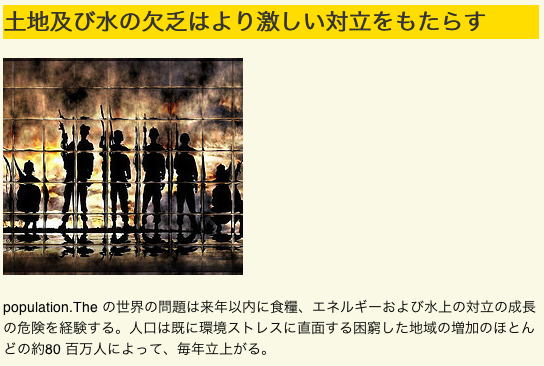
画像は何かを記憶するためにも有用です。 以前紹介した 単語帳.orgというサイトでは、 以下のように単語の意味と画像を同時に表示することによって 単語のイメージを覚えやすくしています。 単語と意味を組にしただけの単語カードをいくら使ってもなかなか単語は 覚えられないものですが、以下のような写真を何度も見ていると、 “voracious” という単語を見るたびにこの顔を思い出してしまいます。 語学学習ソフトとして定評がある RosettaStoneというソフトでも、 単語と画像を一緒にユーザに提示することによって学習効果を高めています。
“voracious”という単語のページ
小さな画像でも有るのと無いのはかなり違います。 携帯電話のメールでは絵文字が有効に使われていますし、 Webページではサイトを簡潔に表現するfaviconを 用意しておくのが一般的になっています。 また、Edward Tufteは、様々な情報をアイコン化してテキスト中に埋め込む 「Sparkline」と呼ばれる 情報視覚化手法を提案しています。 たとえば株価が上がったとか下がったとか書くよりも のような画像をテキストに埋め込んで表現する方が はるかによくわかります。
画像はテキストに比べるとこれまではオマケ的な扱いを受けていましたが、 新たな検索/入力/登録手法の開発によって一級市民になってほしいものだと思います。
このような問題を解決するひとつの方法として、 del.icio.usや はてなブックマーク のような、Web上でブックマークを共有する ソーシャルブックマークサービスが最近よく使われています。 Web上のブックマークにはあらゆる場所からアクセスすることができますし、 ブックマーク数によってサイトの人気がわかるというメリットもあるので、 多くのユーザに活用されているようです。
情報共有という意味ではソーシャルブックマークは大変便利なものですが、 ブラウザのブックマーク機能の代替としては最適とはいえません。 こっそり閲覧したいサイトや非公開サイトは登録するわけにいきませんし、 登録ずみのサイトを表示するのに多少手間がかかります。 ソーシャルブックマークサービスでは 各ブックマークにキーワード(タグ)を登録することを推奨していますが、 よく使うサイトをいちいちキーワードで検索するのは面倒です。
TinyURLでは6文字の英数字が識別名として利用されていますが、
ひとりで利用する場合はもっと短い名前で充分です。
たとえば
朝日新聞のサイトを利用したいとき、
このURLを私のサイト上で“ash”という3文字の名前で登録しておけば
http://pitecan.com/ash
というURLで朝日新聞にジャンプできます。
英文字1文字だと26個しかブックマークすることができませんが、
英数字3文字を利用すれば26×36×36個のURLを区別できますから
個人的に利用する場合は充分でしょう。
また、この機能をFirefoxの右上の検索窓に登録することにより、
Firefox上で“ash”と入力すればすぐに
朝日新聞のサイトにジャンプできるようにしています。
“xxx”という名前でURLを登録したいときは
http://pitecan.com/xxx
にアクセスすると登録画面が表示されるようになっています。
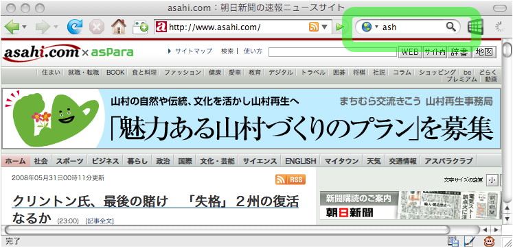
map”という名前で登録しておけば、
http://pitecan.com/map
という名前で地図にアクセスすることができます。
どこかにでかけるときは必ずこの名前で地図URLを登録するようにしておけば、
いつでも同じ名前で必要な地図にアクセスすることができることになります。
3文字ブックマークは
URLをWeb上でコピペできるようにしたものだと考えることもできます。
普通のコピペでは
コピーバッファはひとつしかありませんから名前をつける必要がありませんが、
この場合は3文字の名前で区別することができます。
URLを登録するかわりに
「情報をWebでコピペ」という文字列を
“inf”
という名前で登録すれば、
http://pitecan.com/inf
にアクセスすればこの情報を読むことができます。
異なるマシン間で文字列をコピペするのに便利です。
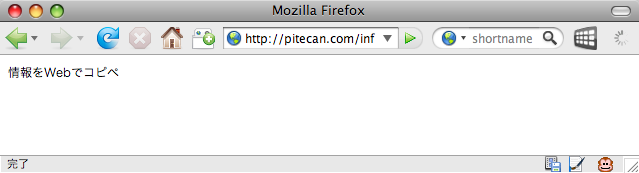
3文字ブックマークやコピペの機能は数年前に作ったものですが、 私は毎日かなりの頻度で利用しています。 現在は私がひとりで利用していますが、 誰でも使えるようになっていれば便利でしょう。 最近は「Web2.0」的な情報共有サービスが大流行していますが、 個人的にWebを活用する小技もまだまだありそうです。
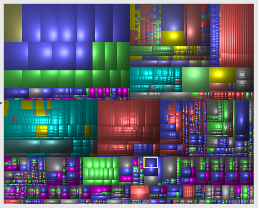
一方、下図はWindowsの SequoiaViewという ソフトを使ってファイルの大きさを視覚化した例です。
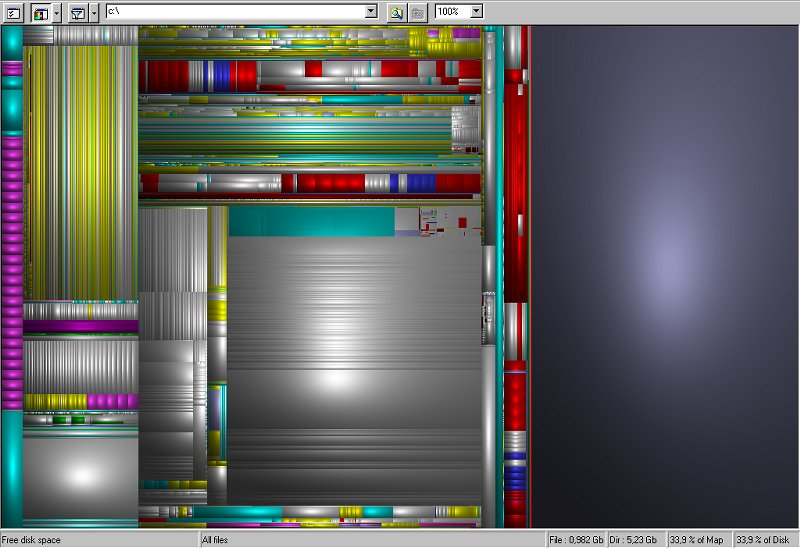
後発のDisk Inventory XはおそらくSequoiaViewに触発されたと思われるので 外見がよく似ていますが、 階層的に配置した矩形の集合でファイルサイズを表現するという方法は University of MarylandのHuman-Computer Interaction Labで開発された TreeMap というシステムに端を発しています。 ディスクの中にどんな大きさのファイルがどれほどあるのかはわかりにくいものですが、 TreeMapのような方法を使うと 大きなファイルの分布を直感的に把握することができます。 このように、 大量の情報をうまく画面上に表示することによって理解を助けるテクニックを 情報視覚化(Information Visualization)と呼びます。
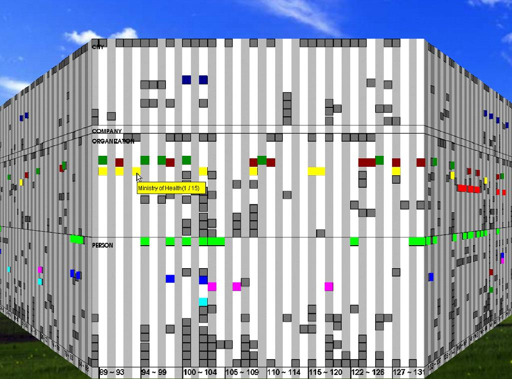
1990年当時は高速3次元表示が可能な計算機は高価だったので このような研究を行なえる場所は限られていました。 また、視覚化が必要なほど大規模な情報もあまり利用できませんでしたから、 そのころ提案された情報視覚化手法はほとんど実用的に利用されることはありませんでした。 一方、最近はどんなパソコンでも高速にグラフィクス表示を行なうことができますし、 Web上の大規模なデータが簡単に入手できるようになってきました。 パソコンの中にはかなりの量のファイルが入っているのが普通ですし、 Web上には何千万件単位のデータが沢山あります。 Ben Shneiderman氏の TreeMapの歴史というページ にはTreeMapの20年の歴史が解説されていますが、 情報視覚化の研究が始まって20年たってようやく本格的な応用が見えてきたようです。
下図は大規模なネットワーク情報を円板上に配置する “HyperbolicTree” という情報視覚化手法の例です。 HyperbolicTreeも90年代にPARCで開発されたもので、 現在注目しているノードを画面の中央に置き、 その親ノードと子ノードをその周囲に配置することを繰り返すことによって すべてのノードを円板内に表示するというものです。 中心から遠くなるほどノードやリンクを小さく表示することにより、 どれほど大きなデータでも画面内におさまるようにすることができます。
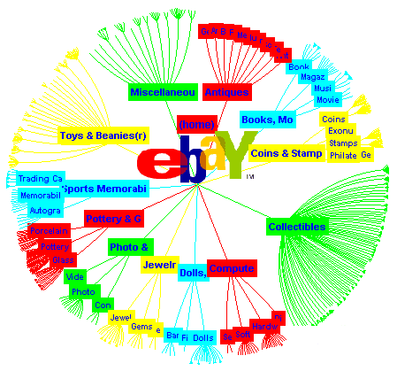
HyperbolicTreeは PARCから分離したInxightというベンチャー企業で “StarTree”という名前で販売されていましたが、 現在は Business Objectsという SAPの子会社に買収されてそこで販売されているようです。
私は “Focus + Context”を考慮して大規模な階層構造を視覚化できる LensBarというシステムを開発しています。 LensBarでは、 ユーザがマウスを左右に動かすことによって リストのズーミング操作を行なうことにより、 すべてのデータを表示したり重要なデータだけ 間引いて表示したりすることができます。 また、検索キーワードを指定することにより、 キーワードにマッチするエントリのみを表示対象とすることができるので、 フィルタリングにより表示量を制御しつつ 全体と詳細を同時にブラウズすることが可能になっています。 以下の動画は Cプログラムのテキストをズーミングしたりフィルタリングしたりしているところです。 マウスを左にドラッグしてズームアウトすると 関数名など重要なところだけ表示されます。 文字を入力するとマッチする行だけフィルタリングされ、 現在表示可能な行が左のスクロールバーの背景に表示されます。 フィルタリングしている状態でズーミング操作を行なうと、 指定したパタンにマッチしている行と重要な行が両方表示されるので、 プログラム全体においてマッチした行がどのように分布しているのかがわかります。
私が運営している 本棚.orgという書籍情報共有サイトでは 情報視覚化の本棚 という「本棚」が作ってあり、 下図のように情報視覚化に関連する各種の書籍が登録されています。 情報視覚化と銘うった日本語書籍はほとんどありませんが、 “Information Visualization”をタイトルに含む洋書はすでに沢山出版されています。 ハイパーテキストの研究がWebとして世の中に浸透するには20年かかりました。 全文テキスト検索の研究がAltaVistaをはじめとする検索エンジンとして世の中に 広まるのにも20年かかりました。 いよいよ情報視覚化の研究が世の中で注目される時代が近付いているような気がします。
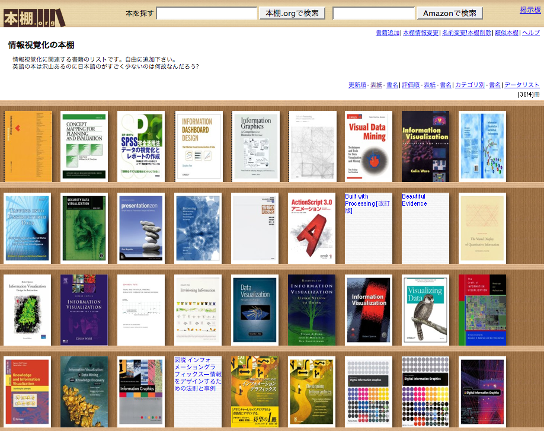
ネット上には Webページ/メール/掲示板/Wiki/ブログなど様々なコミュニケーションシステムが存在しますが、 これらはフロー的かストック的かのいずれかであることが多く、 両方の特徴を備えた便利なシステムはまだ出現していないようです。 掲示板やメーリングリストはフロー型のコミュニケーション手法ですから、 重要な情報をストック的に利用したい場合は アーカイブやまとめサイトを併用しなければなりません。 またWebページはストック型ですから、 内容に変化があったことをフロー情報として通知するために RSSが最近よく利用されるようになってきました。 手作業でまとめサイトを作るのは面倒ですし、 RSSはまだまだ普及が遅れており、 ネット上で フロー情報とストック情報をうまく扱う方法は大きな課題です。
@quickml.com”
というアドレスにメールを出すだけでメーリングリストを作って使えるという
お手軽なメーリングリストサービスですが、
今回これを拡張し、
編集可能なWebページをQuickMLの各メーリングリストに併設することによって
ストック情報も扱えるようにしてみました。
メーリングリストのメンバであれば、
“http://quickml.com/(任意の名前)”
というWebページに情報を書き込むことができます。
先日ヨットのセーリングに誘っていただいたのですが、
sailing-20080316@quickml.comという名前のメーリングリストを作り、
準備などの情報交換のために
http://quickml.com/sailing-20080316
というWebページを活用しました。
事前の準備や食事の用意などに関してはWebページを活用し、
全員への連絡はメールを利用するという方法により、
効率的に事前の情報交換を行なうことができました。
また、撮った写真を後でアップロードして共有するのにも利用しています。
パーティーなどでは参加や準備の連絡がわずらわしいものですが、
そのようなストック情報はWeb上に書き込んでもらい、
全員に連絡する必要があるフロー情報だけメーリングリストに流すことによって
効率的に情報共有を行なうことができました。
通常であれば何十通もメールの交換が必要だったと思われますが、
今回は重要なストック情報はすべてWebに記述し、
「Webに情報を書いて下さい」とか「写真をアップしました」
といったフロー情報だけがメーリングリストに流れたので、
流れたメールは全部で10通程度でした。
セーリングに関するメーリングリストのWebページ

写真の共有

メールはSPAMなどの問題が多いため、 将来的にはフロー情報とストック情報をうまく併用できる 新しいコミュニケーション手段が欲しいところですが、 ケータイのメールが広く普及している現在、 新しいコミュニケーション手段にすぐに移行することは難しいでしょう。 現状では、広く使われているメーリングリストとWebページをうまく併用することによって ストック情報とフロー情報をうまく扱う方法が実用的かもしれません。
print sqrt(X)
のようになります。
Rubyに限らずJavaでもCでも数式や表示の指示に関しては
似たような形式が使われることが多いですが、これは
“display the square root of X”のような英文をそのままの語順で計算機言語に変換した形式になっていますし、 “print”や“square”のような英単語が ほぼそのままプログラミング言語で利用されていますから、 この例では英語表現とプログラム表現はかなり類似しているといえます。
DOSやUnixのコマンドラインでもやはり同様の語順が利用されています。
たとえばabc.txtというテキストファイルの中身を並び替えて表示したい場合、
Unixではsortというコマンドを使って
% sort abc.txt
のようなコマンドを発行します。この表現も、
“sort (the contents of) abc.txt”のような英文表記と似た語順と用語が使われていますから、 このコマンドは英語的思考にもとづいているといえるでしょう。
一方、このような処理を日本語で表現する場合は
“xの平方根を表示する”のように全く逆の語順になってしまうわけですが、 英語的発想にもとづいたシステム上でプログラムを作成するときはこの順番で考えず、 英語の場合と同じように、目的語より先に動詞を持ってくる思考を行なう必要があります。
“abc.txtの内容をソートする”
print inv(sqrt(x))
のような式を使うのが普通ですが、処理がさらに連続する場合、
後で実行する処理ほど前に記述しなければならない
という問題が理解を困難にしてしまうことがあります。
平方根を計算してからその逆数を計算して表示するという順番なのに、
全く逆の順番でプログラムを書かなければならないというのは、
英語的かもしれませんが合理的ではありません。
一方、Unixでは
処理をする順番にコマンドを右に並べていくことによって
連続的な処理を実行させることが可能です。
たとえば、
あるテキストファイルのコメント行を削除してから並び替えたい場合、
ファイルの中身を出力する“cat”コマンド及び
パタンにマッチする部分だけを抽出する“grep”コマンドを利用して
% cat abc.txt | grep -v '^#' | sort
のように、処理をひとつずつ“|”で区切って右に並べられる
ようになっています。
この表現法の場合、処理の順番とコマンド並びの順番は完全に一致しているので、
実行の順番について混乱することはありません。
Rubyのようなプログラム言語でも、前述のような関数表記を利用するかわりに、 処理をピリオド記号で連結する表記を使うことによって、 Unixのコマンドラインと同様に、処理を順番に並べたプログラムを書くことができます。 たとえば前述のプログラムの場合は
X.sqrt.inv.print
のように表現することが可能です。
実行内容は全く同じですが、
このように表記する場合は処理の順番とプログラムの並びが一致するので、
print inv(sqrt(x))
のような表現よりは理解しやすいと思われます。
calculate the square root of x, calculate the reciprocal of the result, and print the resultのようになってしまいますが、これはあまり明解な文章とはいえないでしょう。 一方、日本語であれば
Xの平方根の逆数を印刷するという具合に、 処理の流れとプログラムの形式と日本語表現を同じ順番で簡潔に記述することができます。 このように、 実は日本語は計算機処理の記述にかなり適した言語であるということができそうです。
"増井".bookshelf.books
のような表記を使うことができますし、3行目まで連結したものは
"増井".shelves.books.similarbooks.shelves.books
のようなプログラムで表現できます。
このような性質を利用すると、
本棚演算のようなちょっと面倒な計算についても、
日本語文を作るのと同じ要領で計算式を作ることができるようになります。
下の例では、
「増井の本棚に内容が近い本棚に含まれる本のリストを計算する」
という作業を日本語で表現することにより、
それをダイレクトに計算機プログラムに変換して本棚演算を実行しています。
日本語表現では、計算結果を表現する名詞や計算実行を表現する動詞を
自然に文末に配置することができるので、
こういった連続処理をうまく連結して、
常に日本語として正しい計算式を作ることができます。
以下の例では、
「増井の本棚」に類似する本棚(似た本を多く含む本棚)に登録されている本を集めて登録の多いものから順に表示するというプログラムを、
日本語表現を並べることにことによって作成しています。
日本語で簡単にプログラムを作れたらいいなぁと思うのは日本人としては自然なことであり、 これまで様々な「日本語プログラミング」が提案されてきましたが、 広く使われているものはほとんど無いようです。 日本語プログラミングといっても、 “print”のようなキーワードを日本語にしただけではあまりメリットが感じられませんが、 文の構造と計算機処理の流れを一致させやすいといった日本語特有の性質を充分活用すれば、 普通の英語的なプログラミングよりも良い結果が得られる可能性があるでしょう。 汎用プログラミング言語として日本語を使うことができなくても、 本棚演算のような特定領域での利用には明らかに有用ですから、 活用法を検討する価値はありそうです。
書類であれば 公証役場で 証明してもらうことができますし、 電子的なデータに関しては 電子公証制度のようなものを 利用することもできますが、 あまり気軽に利用できるものではありません。 重要な発明などが関係する場合はこのような公的システムを利用する方が安心ですが、 ちょっとしたアイデアやソフトウェアについて、 いちいちこのような方法で存在を証明しておくことは現実的ではないでしょう。
デジタルデータは後でいくらでも作成することができますから、 データそのもので古さを証明することはできません。 偽造が不可能ななんらかの別の手段を使って証明する必要があります。 たとえば、データをDNAに埋め込んだ木を育てるという方法が考えられます。 樹齢10年の木の芯の細胞内DNAにデータが入っていれば、 そのデータが10年前から存在したという主張は説得力があるでしょう。 しかしアイデアを思いつくたびに木を植えるわけにはいきませんから、 もう少し手軽で偽造が難しい方法が使えると便利です。
存在を証明したいデータがあるとき、 MD5や SHA のような一方向性関数 を利用してデータのハッシュ値を計算し、 その値をURLに変換して del.icio.usや はてなブックマーク のようなソーシャルブックマークシステムに登録しておけば、 登録した時点でこのデータが存在したことを これらのサービス上で証明することができます。 たとえば
main(){ printf("hello, world!\n"); }
というプログラムが2008年2月に存在したことを証明したい場合、
このデータのSHA-1値は
d8981ce8be9cd53cbb891f75ebdbcbc5a457eaa8という160ビットの値になるので、これをURL風に変換した
http://d8981ce8be9cd53cbb891f75ebdbcbc5a457eaa8/のような文字列をソーシャルブックマークシステムに登録しておきます。 この情報を複数のシステムに登録しておき、それらすべての タイムスタンプが2008年2月より前であれば、
d8981ce8be9cd53cbb891f75ebdbcbc5a457eaa8
というSHA1値をもつデータが2008年2月に存在したことを信じる根拠は充分だと考えられます。
SHA1は一方向性関数なので
前述のプログラム以外のデータからこのハッシュ値が計算されることはありませんし、
ハッシュ値からこのプログラムを逆生成することもできませんから、
データの内容を明らかにすることなく、
ある時点においてある情報が存在したことを証明できたことになります。
SHA1のような関数の一方向性は絶対に確実なものではありませんし、 ソーシャルブックマークシステムの運用も絶対に確実なものではありませんから、 この手法による存在の証明は絶対的なものとはいえません。 しかし、データのハッシュ値を計算したりソーシャルブックマークに登録したりすることは 誰でも簡単にできますから、 情報が存在したことを証明するための手軽な方法として利用することはできるでしょう。
Web上の情報共有サービスは今後もどんどん増えてくることでしょう。 現在のところ、共有された情報自体を楽しむという単純なサービスがほとんどですが、 データの存在の証明や重要度の計算といった新しい応用が増えてくることを期待したいと思います。
感覚は経験に大きく左右されます。 歳をとると時間の経過が速く感じられたり、 帰り道が行きの道より短く感じられたりするのは、 新しい経験が減るからでしょう。 繰り返しの多い圧縮可能な人生を送っていると あっという間に時間が過ぎてしまいますから注意しなければなりません。 生活に繰り返しが多くなってきたと感じたときは引っ越したり転職したりすると 時間が長く感じられるようになります。
財力があっても工夫が足りなければ満足することはできませんが、 金が無くても毎日新しい発見があれば楽しく満足した暮らしができるはずです。 新しいことが好きで好奇心が衰えない人は 歳をとってもボケたりせずに元気に生活しているように見えます。 楽しく面白い人生を送るためには財力よりも発見力が重要だと思われます。
Web上には新しい情報があふれているので、 工夫次第で毎日かなりの面白い発見をすることができます。 まったく手がかりなしに面白い情報を捜すのは難しいので、 ソーシャルブックマークシステムのような手軽な情報共有システムを利用したり、 面白いブログのRSSを講読したりして情報を捜すことがよく行なわれていますが、 このような方法で情報収集を行なうと 情報の一極集中が起こりがちです。 Webによって情報伝達の距離が消えてしまった現在、 似たような趣味や意見をもつ人達が簡単に集まることができますから、 その集団の中だけの意見が構成されてしまいがちです。 同じグループで意見がかたまってしまう現象は Groupthinkと呼ばれており、 これによって様々な不具合が生じることが知られています。 Groupthinkによって間違った結論が導かれたり イノベーションが阻害されたりすることは多いようです。 面白い情報を捜すときはこの弊害はそれほど深刻ではないかもしれませんが、 もっと面白い情報をみつけるのに失敗する可能性は高くなってしまうでしょう。
新しい情報を捜したり新しい体験に挑戦したりするのは骨が折れるものですが、 私は最近、 Wikipediaページをランダムに表示するスクリーンセーバ を利用して新しい情報を発見する実験をしています。 Wikipediaには おまかせ表示という リンクが用意されており、 これをクリックするとランダムなページが表示されるようになっています。 自動的にこれが表示されるようにしておけば、 常に自分が知らない新しい情報が身の回りに表示されていることになるため、 頭のリフレッシュにとても有効です。 自分は何もしなくても面白い情報がテレビのように勝手に表示されるという 受動的な仕組みは 不精者にも最適です。 一見矛盾する「受動的」と「発見」が楽しい人生のキーワードになるかもしれません。


検索した結果を入力テキストに貼り付けるのは面倒ですが、 POBoxのように両者が一体化していればコピペの手間を省くことができます。
一般的な図形エディタでは、 テキスト入力/図形入力/画像入力は異なる機能として実装されているのが普通です。 しかし何かを検索した結果を入力に利用しているという意味ではこれらは全く同じものです。 「masui」という読みから「増井」という漢字を入力する操作/ 「masui」という読みから「増井」の写真を検索して貼り付ける操作/ 「rectangle」のような読みから矩形を貼り付ける操作/ は似たようなものですから 同じ手法として実装してかまわないはずです。 このようにすれば、必要な機能の数はかなり減らすことができるかもしれません。 「hikouki」で飛行機の写真を検索して入力したり、 「hikouki」という読みでその写真を検索することもできることになります。
ブロガーも作家も研究者も、 Webなどで集めた情報をもとに新しい情報を作成して公開するという作業を毎日繰り返していると いえますが、 検索⇒ 入力⇒ 編集⇒ 公開⇒ 検索⇒ ... のような情報検索/発信サイクルは、 検索と入力が混然一体となれば 情報の流れがさらに効率的になると思われます。
創造的な活動を行なっているときは常に何らかの検索活動がともなっているはずです。 普通の人間は脳内で検索を行ないながら創造的活動を行ないますが、 計算機上の作業結果をもとに自動的に検索を行なってユーザに提示する Remembrance Agent というシステムや、 これにインスパイヤされたと思われるMicrosoftの Implicit Query のような手法を利用すれば、 暗黙的に検索を行ないつつ創造的活動の支援が可能だと思われます。 プログラミングのように創造的と考えられている分野でも、 最近はかなりの部分をコピペプログラミングですませることができますから、 検索とプログラムの入力は切り離せないでしょう。
Webで検索した情報をそのままコピペしてレポートにしたり、 Webで検索した文章を盗作して発表したりといった話が最近よく問題になっています。 検索したデータを自分のものとして発表するのはケシカランという意見が今のところ圧倒的ですが、 検索と入力の違いが曖昧になりつつある現状を象徴しているような気もします。 検索と入力は異なるものだと誰もが思っているのでこういうことが問題になるわけで、 検索可能な情報は再利用されるものだという認識があれば、 さほど腹もたたないかもしれません。 ネット上のデータにアクセスすることとダウンロードするのに大きな違いはありませんし、 他人のデータを公開することと他人のデータのURLを公開することの区別も大きくないかもしれません。 データを検索することとその内容を公開することも似たようなものと考えられるようになるかもしれません。 青空文庫のテキストを辞書として予測変換で小説を書いたらそれは誰の作品になるのでしょうか。 データの検索と作成の違いは今後ますます曖昧になってくることでしょう。 検索と入力が融合していくにつれ、 様々な新しい問題も出る可能性はありますが、 長い目で検索と入力の融合の工夫について考えていきたいと思います。
逆に、能力や知識が有る人は、それが無い人の状況を想像することができないものです。 数学がよくできる先生は、数学の苦手な生徒の頭の中を想像することはできませんから、 生徒のレベルに合った教え方を工夫することができず、 「何故この生徒はこんなことがわからないのだろう」という印象を持ちがちです。 昔はその先生も生徒と同じような心境だったことがあるかもしれないのですが、 技術や知識を一度獲得してしまうと、それ以前の状況を思い出すことは不可能です。 誰でも子供のころは字が読めなかったはずですが、 大人になってしまうと、漢字を読めない人が日本語の文章を見たときの 気持ちを想像することは難しいでしょう。 一流のプレーヤが必ずしも一流の指導者になれないのも同様の理由です。
知識を得ることによって知識が無いときの状況がわからなくなるという現象は 「Curse of Knowledge」 (知識の呪縛) と呼ばれています。 Heath兄弟によるMade to Stickという本では、 知識の呪縛の例として、 1990年ごろStanford大学のElizabeth Newtonが行なった 「Tapper and Listener」という実験が紹介されています。 ふたりの被験者のうちひとりが頭の中に何か曲を思い浮かべ、 そのリズムでもうひとりの肩を叩いて何の曲かを当てさせます。 たとえば「どんぐりころころ」を頭に思い浮かべた場合は 「タンタタタタタタ タンタタタ」というリズムで肩を叩きます。 いろいろな曲を使って実験を行なった結果、肩を叩かれた人は実際には2.5%ぐらいしか曲を当てることが できなかったにもかかわらず、 叩いた方の人間は50%ぐらい当たるだろうと予測していたことがわかりました。 曲を思い浮かべている人間にとっては リズムと曲との結び付きは自明だったわけですが、 予備知識が無い人間にはそれをほとんど理解することができなかったことになります。 知識を持つ人と持たない人の感じ方の違いは甚大です。
知人のサイエンティストがエンジニアリング的に疑問がある発言をするのを よく耳にしたことがあります。 優秀な人が何故変なことを言うのかずっと不思議だったのですが、 その人物に工学的センスが無いのが原因だということに気付くにはかなり時間がかかりました。 私の周囲には工学的センスを持つ人が多いため、それを持たない人の ことを想像することができなかったわけです。 また私はアメリカやヨーロッパで道を尋ねるのに失敗したことがよくあります。 ホテルや店の人に地図を見せて道順を聞いたとき、 いろいろ難癖をつけられて教えてもらえなかったことが何度もありました。 実は彼等は地図を読むことができず、 それを隠すために変な理屈を言っていたのですが、 それに気付くまでは相当不思議な思いをしたものです。 これらはすべて知識の呪縛にもとづく失敗だったといえるでしょう。
第4回で紹介した 画像なぞなぞ認証のような手法が流行しないのも、 知識の呪縛が影響している可能性があります。 画像なぞなぞ認証では、 自分だけが詳細を知っている写真を問題として選ぶ必要があるのですが、 自分がある写真の詳細を知っているときは 他人もそれを知っているような気がしてしまいますから、 認証問題として強度が弱いように錯覚しがちです。 逆に、自分が覚えにくい変なパスワードの場合、 他人にとっても破るのが難しいだろうと勘違いしがちです。 知識の呪縛が存在する限り、 この問題を解決するのは難しそうな気がします。
自分が作った機械を世の中に普及させたいのであれば、 自分以外の誰もが使えるようにする必要があります。 他人の嗜好や考え方を充分想像することができなければ、 自分だけしか使えないシステムしか作ることはできないでしょう。 他人の頭の中を想像するのは難しいことですが、 常に他人からのフィードバックに耳を傾けるような努力が必要だということを 充分認識していれば、 知識の呪縛のために失敗する可能性を最小限にすることは可能でしょう。 第14回に書いたように、 毎日が同じことの繰り返しだと時間が経つのが速くてつまらないものですが、 身近な他人の自分との違いに気をつけていれば、 いつも新しい発見があって人生が豊かになり、 誤解や失敗を減らすことができるかもしれません。
すぐれたソフトウェアが大量に世の中に出回っているため、 わざわざ自分で何か作ってみようという気にならないのも プログラミングが流行らない理由のひとつかもしれません。 プロが作る料理の1/10のクオリティの料理を自分で作ることは可能かもしれませんが、 市販ソフトの1/10のクオリティのソフトウェアを自作することはほとんど不可能ですから、 自分でソフトウェアを作ってみようという気持ちになりにくいでしょう。
また最近は、自分で何かを作ることは流行らないようで、 楽器を演奏したりコンサートに行ったりするのは下流の人間だと 断言してる本があったりするぐらいですから、 プログラミングは下等な仕事だと思われているのかもしれません。 また、 普通のパソコンでは、ディスプレイ/キーボード/マウス以外の入出力装置を利用できませんから、 気のきいた新しい遊び方を発見することは容易ではありません。 既存のプログラムをダウンロードすれば充分なことがほとんどで、 わざわざ自分で作って実験しようという気持ちにはならないでしょう。
line(10,10,100,100);」のようなプログラムを
入力して「再生ボタン」を押すだけで、
画面上にウィンドウが表示されて直線が描画することができます。
このようなシステムは昔のBASIC並に手軽に使えるうえに、
最新のプログラミング技術やWeb技術も使うことができます。

また、 プログラムから手軽に使えるセンサやアクチュエータが手に入るようになってきたため、 ディスプレイやキーボード以外のものをコントロールすることができるようになってきました。 カルガリ大学で開発されたPhidgetsや IAMASで開発されたGAINERのような USB接続のセンサ/アクチュエータを利用すると、 特別なハードウェアを製作することなく、 実世界の情報を取得したり実世界のものを動かしたりすることができます。 例えば、Phidgetシリーズのs体重計をパソコンのUSBポートに接続すれば、 簡単なプログラミングで 第7回で紹介した 「気合いブックマークシステム」を作ることができます。
インターネットにあらゆる計算機が接続されているため 世界中のセンサやアクチュエータを捜査するプログラムを作ることが できるようになりました。 世界中の誰もが世界中の装置を自由に操作する 全世界プログラミングが人類史上はじめて可能になったことは 歴史的な大事件だと言えるかもしれません。
世の中にかなり普及している以下のようなプログラミングは 全世界プログラミングの第一歩です。 これらのシステムでは条件とアクションがはっきり決まっているので わかりやすいのが特徴です。
if 炎上('増井のブログ') then
油を注ぐ()
end
のようにテキストでプログラムを書くのは面白くありませんが、
炎上ぶりをビジュアルに表現するプログラムを利用したり、
第9回で紹介した
例示プログラミングを使って例示で炎上ぶりを表現できると良いかもしれません。
全世界>の誰もが全世界の センサやアクチュエータをプログラミングできる 全世界プログラミング世界の面白さや恐ろしさはこれから明らかになってくることでしょう。
たとえば上のようなテキストを下のように変換する場合、 「行頭に“メールテキストを引用するとき 引用記号を先頭につけるのが 慣習ですが、 手作業で引用記号をつけるのは 面倒なものです。
# ”を挿入して次の行に移動する」
という操作を5回繰り返さなければなりません。
5行程度なら良いのですが、 百行も千行も同じ操作を繰り返すのは我慢できないでしょう。# メールテキストを引用するとき # 引用記号を先頭につけるのが # 慣習ですが、 # 手作業で引用記号をつけるのは # 面倒なものです。
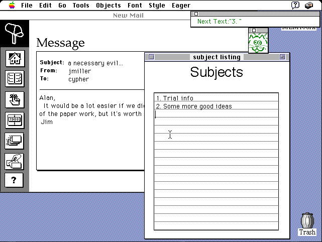
猫は普段は隠れているのですが、 繰り返し操作を行なったとき突然猫が出現すると驚いてしまいますし、 常に正しい予測を行なってくれるわけではないせいか、 Eagerは結局ほとんど流行しませんでした。
一方、高度な予測を行なうのはあきらめて、 完全にユーザ主導で単純な繰り返し処理を自動実行させるようにすればうまくいきます。 このような方針で Dynamic Macroというシステムを 作りました。
このテキストに引用符をつけたいとき、 まず以下のように最初の2行だけに引用符を付加します。メールテキストを引用するとき 引用記号を先頭につけるのが 慣習ですが、 手作業で引用記号をつけるのは 面倒なものです。
ここでユーザが「繰り返しキー」を押すと、 Dynamic Macroはユーザの操作履歴を調べて繰り返しを検出し、 「行頭に“# メールテキストを引用するとき # 引用記号を先頭につけるのが 慣習ですが、 手作業で引用記号をつけるのは 面倒なものです。
# ”を挿入して次の行に移動する」
という操作をマクロとして登録して実行します。
この結果テキストは以下のようになります。
繰り返しキーを連打すると、 キー入力のたびにマクロが実行され、 テキストは以下のように変化します。# メールテキストを引用するとき # 引用記号を先頭につけるのが # 慣習ですが、 手作業で引用記号をつけるのは 面倒なものです。
Dynamic Macroの場合、 連打が必要ではありますが、 ユーザが驚くことはありませんし、 予測を間違う可能性は低いので、 かなり実用的に利用することができます。# メールテキストを引用するとき # 引用記号を先頭につけるのが # 慣習ですが、 # 手作業で引用記号をつけるのは # 面倒なものです。
Cyper氏は最近はIBMでFirefoxの操作を自動化する研究を行なっているようですが、 Webの上で様々な繰り返し操作が自動化できると嬉しいことは多そうです。
効率的なデータ圧縮を行なうアルゴリズムとして PPM (Prediction by Partial Matching)法 というものがあります。 PPM法では、データの中の文字列出現頻度を計算することによって 次の文字の予測を行ないます。 たとえば「abracadab」というデータの次にどの文字が来るか予測する場合、
この原理を使って じゃんけんゲームを作ってみました。 長く勝負すると必ず負けてしまうので、確かに効果的な予測が行なわれていることがわかります。
人間の行動や人間が目にするものは繰り返しで満ちています。 毎日同じような行動をしていると、 今日の行動記録は「昨日と同じ」のように圧縮可能になってしまうので、 歳をとるとだんだん時間がたつのが速く感じられてしまうのでしょう。 繰り返しの少ない/圧縮しにくい人生を送るために、 無駄な繰り返しを自動化するツールを活用しましょう。
しかし現実には、 あらゆる編集操作を記録しているシステムはほとんど存在しないようです。 よく使われているワープロも表計算ソフトも 自動的にファイルをセーブしてくれる気配はありませんし、 データを入力して登録したと思ったら「データが間違っています」などと言って 入力フォームをクリアしてくれるWebサービスに癒されることも日常茶飯事です。 21世紀にもなってこのような状態が続いているということは、 あらゆる操作処理を記録しておくことの重要性がまだまだ認識されておらず、 貧乏根性がしみついているのが原因なのでしょう。
あらゆるシステムが駄目だというわけではありません。 一時流行したPalmの「メモ帳」には「セーブ」機能が存在せず、 入力した文字はすぐに内蔵メモリに書き込まれるようになっていたので データのセーブ忘れというトラブルは発生しませんでしたが、 残念ながらundo機能はありませんでした。 また Windows上のメモシステムとして定評のある 紙copiのように 自働セーブやundo/redoを充分サポートしているソフトウェアもありますが、 こういう製品はまだ少数派であり、 業界に浸透した貧乏根性の完治には時間がかかりそうです。
既存のシステムでも、 工夫次第で貧乏状態を脱出できる場合があります。 Unixユーザの間で昔からよく利用されてるEmacsエディタは、 ご多分にもれずセーブ操作をしなければデータは保存されませんが、 カスタマイズを行なうことによって問題を解決することができます。 山岡克美氏と高林哲氏が作成した auto-save-buffers というプログラムを利用すると、 0.5秒操作が止まるとすぐにファイルが自動的にセーブされるようになるので、 ファイルをセーブし損うトラブルを大幅に減らすことができます。 最近の計算機の場合、よほど巨大なファイルを編集する場合以外、 頻繁にファイルをセーブしても全く気になることはありませんし、 Emacsは強力なundo機能が装備されているので 以前の状態に戻すことも簡単です。 編集を完全に終了してしまうと以前の状態に戻すことはできませんが、 CVSや Subversioin のような バージョン管理システム を併用することにより、 昔の状態に戻すこともできるようになります。
最近はWeb上のWikiで情報を管理することが多くなってきましたが、 ブラウザ上の編集インタフェースは激しく貧乏度が高いので、 編集中のデータをセーブし損ってしまうこともありますし、 一度編集すると昔の状態に戻すことができないのが普通です。 こういう状態が続くのは問題なので、 前回紹介した Web単語帳システムで、 「編集した情報はすぐに書き込まれる」 「任意の状態に戻すことができる」 という機能を実装してみました。
下図はラジオで聞いた “ready to prime time” という表現を単語帳に登録したもので、 意味、用例、関連情報が登録されています。

この状態でundoキーを何回か押すと下図のような状態になります。 “ready to prime time”というフレーズは辞書に載っていなかったため、 人に聞いたり検索し直したりして編集を行なったわけですが、 単語帳システムではundoキーを押すことによって編集履歴をすべてたどることができます。 また、データの古さに応じてバックグラウンドの色が変化するので、 いつごろ編集されたデータなのかを判断しやすくなっています。

このシステムには書込みボタンが存在せず、 編集結果はすべてセーブされるようになっています。 貧乏なシステムに慣れている人にとっては、 本当にデータがセーブされているのか不安になるかもしれませんが、 undo/redoで編集状況を確認することができればこういった不安は 減ってくるでしょう。
パソコンやWeb上で貧乏性が払拭されるにはまだまだ時間がかかるのかもしれませんが、 この程度の機能であれば簡単に実装できるので、 あらゆる場所でこのような機能が常識になってほしいものだと思います。
ネット上でデータを管理することには多くのメリットがあります。 データを一元化できるので混乱が減りますし、 どこでもデータを参照したり見せたり共有したりすることができます。 JavaScriptやFlashなどのプログラムをネット上に置いておけば どこでもシステムのデモを見せることができます。 ローカルマシンで編集/作成した情報をネット上で保存/公開するという方法は かなり普及してきたといえるでしょう。 ネットになかなかつながらない状況だとデータ保存や閲覧ができないのが問題ですが、 時々は確実にネットに接続できる状況であればこのような運用方法が良いようです。 一方、常にネットに接続している環境であれば、 ネット上で提供されているワープロや表計算ソフトなどを利用して、 データの編集や作成もすべてネット上で行なうという方法が今後有利になってくるでしょう。
下図は、私が個人的に使っているWikiと 同じ原理で動いているWeb単語帳です。 ネットで読んだ記事中に知らない単語があったとき、 ネットで単語の意味を調べ、 ネットに登録して勉強に利用するという使い方ができます。 単語から写真検索を行ない、関連した画像を登録しておけば、 その印象を使って単語を記憶しやすくなります。
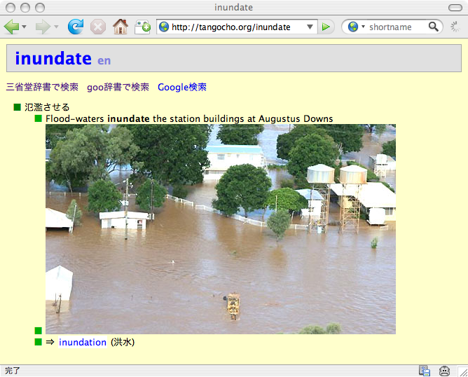
一般的なWikiでは、編集モードでデータを編集してから 書込み操作を行なう必要があるので面倒ですが、 Web単語帳では クリックされた行は以下のように編集可能になり、 編集結果がすぐに書き込まれるようになっています。 メモ書きの場合はこのような手軽さが重要でしょう。
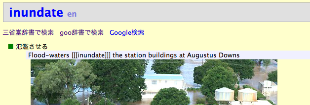
いつでもどこでもネットに確実に接続できる時代になれば、 メモもメールも文書もネット上で書き始めるようになるかもしれません。 ネット上の様々なデータを簡単に操作したり編集したりする方法は 今後ますます重要になってくるでしょう。
データマイニングの効果に関しては ビールと紙オムツの逸話が有名です。 米国の大手スーパーで商品の購入の相関を調査したところ、 週末の夜には何故かビールと紙オムツが同時に売れるということが判明したため、 両者を同じ売場に置いたところ売上が大きく増加したというもので、 スーパーでオムツを買って帰れと奥さんに言われた旦那が ついでにビールも買って帰るのだと説明されることが多いようです。
販売データから自動的にこのような関係を計算できるというのは面白い話で、 データマイニングの威力を示す好例として有名なのですが、 残念ながらこれは実話ではなく、 「あるスーパーの調査では金曜の夕方にビールと紙オムツの売上が多かった」という 結果に尾鰭がついた都市伝説だというのが 真相のようです。
データマイニングの威力を示す一番有名な話が都市伝説だったというのはお寒い話ですが、 データマイニングそのものが無力だというわけではありません。 最近はネットのおかげでデータの質も量も増えていますし、 様々な新しい分析手法も提案されてきているので、 将来はデータマイニングがもっと有効に利用されるようになると思われます。
Amazon.comで本などを検索すると、 「この商品を買った人はこんな商品も買っています」 といって関連商品を薦められることがあります。 商品の売れるパタンをもとにしたデータマイニングによってこのような 情報が計算されているわけですが、 特定の個人の購買パタンにもとづいて計算が行なわれているわけではなく、 全ユーザの購入パタンから計算した結果としてこのようなお薦め商品が提示されるようになっています。 Amazonはユーザの数が非常に多く、 個人ごとにパタンを計算することがほぼ不可能なのでこのような手法がとられているわけですが、 本棚.orgではユーザ数は1万程度ですから、 ユーザごとに計算を行なうことも難しくありません。
本棚.orgではユーザが自由に作成した本棚ごとに複数の本が登録されています。 「増井の本棚」に 「Blue Note Cover Art」 「逆風野郎」 などの本が登録されており、 「svslabの本棚」に 「逆風野郎」 「スモールワールドネットワーク」 などの本が登録されているとき、 全本棚データは以下のような本棚行列で表現することができます。

|

|

|

|

|

|
|
| 増井の本棚 | ||||||
| svslabの本棚 | ||||||
| 桐華の本棚 |
この表から以下のようなことがわかります。
「増井の本棚」行と「svslabの本棚」行を加算すると以下のような行列が得られます。
|
|
|
|
|
|
|
|
| 増井+svslab |
この演算の結果、「逆風野郎」や「スモールワールドネットワーク」は人気があることがわかります。
また、 「増井の本棚」行から「svslabの本棚」行を減算すると以下のような行列が得られます。
|
|
|
|
|
|
|
|
| 増井-svslab |
「増井の本棚」と「svslabの本棚」は似ているにもかかわらず 「アカギ」「掌の中の小鳥」は「svslabの本棚」に含まれていないため、 これらの本は「svslab」への推薦候補と考えることができます。
このような計算を本棚行列の行や列に対して行なうことにより、 様々な有用な情報を取得することができます。 たとえば、私が読むべき本を捜したい場合、 まず私の本棚と同じような本が登録されている本棚を捜し、 そこで登録されているにもかかわらず私の本棚には含まれていないような本を 捜せばよさそうです。 手順は以下のようになります。
17 4839912653 Code Reading―オープンソースから学ぶプログラミングテクニック 17 4844317210 Rubyソースコード完全解説 (青木 峰郎, まつもと ゆきひろ) 14 4314005564 利己的な遺伝子 (リチャード・ドーキンス, 日高 敏隆, 岸 由二, 羽田 節子, 垂水 雄二) 14 4797318325 Wiki Way―コラボレーションツールWiki (ボウ ルーフ, ウォード カニンガム, 14 4756136494 プログラミング作法 (ブライアン カーニハン, ロブ パイク) 14 489471163X 計算機プログラムの構造と解釈 (ジェラルド・ジェイ サスマン 13 4798102040 コモンズ (ローレンス・レッシグ, 山形 浩生) ...確かに私が買いそうな本が並んでいますが、 計算機関連の本が多すぎますし、 自分の持ってる本が含まれているので、
10 406313248X 攻殻機動隊 (1) (士郎 正宗) 10 4140807431 新ネットワーク思考―世界のしくみを読み解く (アルバート・ラズロ・バラバシ, 青木 薫) 9 4756133126 ロボットにつけるクスリ―誤解だらけのコンピュータサイエンス (星野 力) 9 4167330083 ぼくはこんな本を読んできた―立花式読書論、読書術、書斎論 (立花 隆) 7 4063211444 げんしけん (1) (木尾 士目) 7 4061495755 動物化するポストモダン―オタクから見た日本社会 (東 浩紀) 7 410401303X 博士の愛した数式 (小川 洋子) 7 415011451X しあわせの理由 (グレッグ イーガン, Greg Egan, 山岸 真)本棚.orgと同様の構造を持つデータはいろいろあります。 例えばSNSにおけるユーザとコミュニティの関係は、本棚と本の関係と同じ構造になっていますから、 同様の演算によるデータマイニングを行なうことが可能です。
Cogoloというサイトでは、 公開情報から人物情報をマイニングするサービスを提供しています。
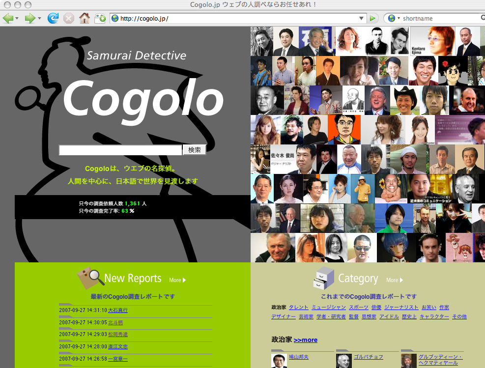
Cogoloで「増井俊之」を検索すると、 Web上の公開情報をもとにして様々なマイニングを行ない、 以下のような結果を表示してくれます。
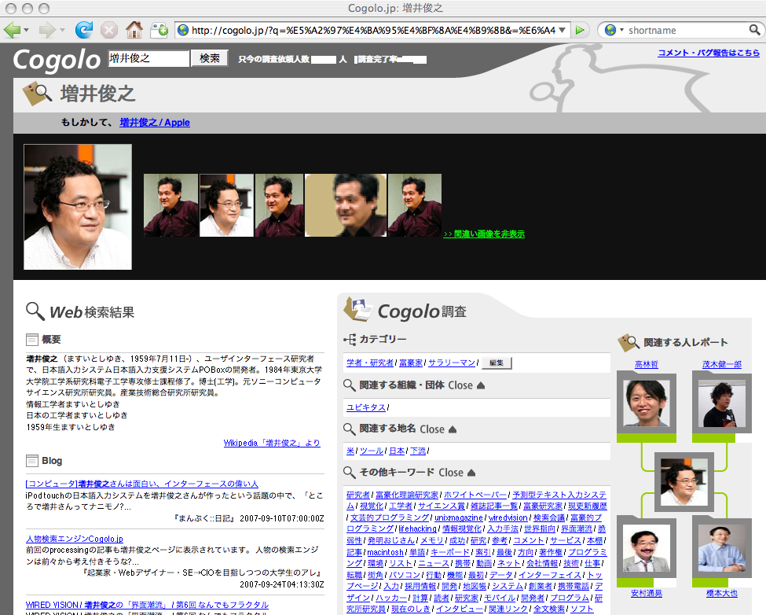
謎のキーワードも沢山表示されていますが、 写真や人脈を含め結構正確にデータマイニングが行なわれていることがわかります。 間違った写真などは誰でも修正できるようになっており、 自動的なデータマイニング技術と人力パワーをうまく融合して利用できるようになっています。 Cogoloの精度はまだまだ充分とはいえませんが、 新しいマイニングアルゴリズムや人力パワーを融合することにより、 Webの検索が新時代を迎えるかもしれません。
あるページが面白いと感じたとき、 そのページをソーシャルブックマークに登録する人の数は 恐らく閲覧する人の数の1/100以下だと思われます。 URLを登録するには時間と手間がかかりますし、 適切なタグをつけるためには頭も使う必要があるからです。
ソーシャルブックマークに限らず、 データを登録する作業は大抵の場合面倒ですから、 積極的にデータを登録している人は多くありません。 かな漢字変換のように日常的に利用する重要なシステムでも、 マメに単語登録してる人はかなり少数派だと思われます。 毎日のように使うシステムですから、 よく使う単語や表現を登録しておけば便利に決まってるのですが、 登録処理は面倒な気がするので、 毎日苦労して切り貼りしながら入力を行なっている人も多いと思われます。
受動的に計算機を利用する ような方法に比べると、 クリックしたり検索したりする操作は面倒なものですが、 検索対象となるデータを登録する作業は輪をかけて面倒であり、誰もが簡単に行なえるものではありません。 しかしWeb2.0的な情報共有を行なうためにはデータの登録は不可欠です。 誰でも簡単に情報の登録が行えるようにするためには、 完全に登録を自動化するか、 登録操作を非常に簡単にする必要があります。
下図は テキストエディタEmacsで予測型入力システムPOBoxを利用しているところですが、 ここで「ソーシャルブックマーク」という単語を 「scb」という読みで登録する例を示します。
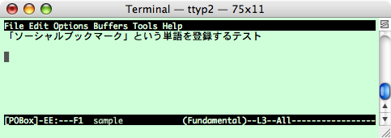
POBoxは、辞書から検索した単語を選択するという操作を繰り返すことによって テキスト入力を行なうシステムです。 Emacs版POBox上で「s」を入力すると、下図のように、 読みが「s」で始まる単語が候補として表示されます。
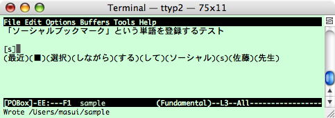
「ソーシャルブックマーク」という単語は登録されていませんから、 「scb」と入力すると候補は何も表示されません。
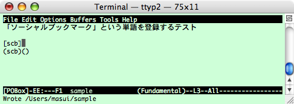
「ソーシャルブックマーク」を登録したいときは、 下図のように「ソーシャルブックマーク」という単語を選択して クリップボードにコピーしておきます。
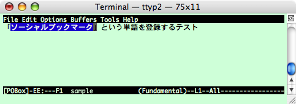
この状態で「scb」を入力すると、すでに登録されている単語に加え、 クリップボード内の単語が候補として表示されます。
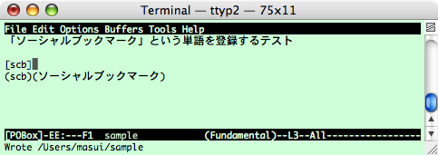
候補から「ソーシャルブックマーク」を選択して確定すると、 「ソーシャルブックマーク」という単語が「scb」という読みで辞書に登録されるので、 その後は「sc」などと入力するだけで「ソーシャルブックマーク」が候補に出るようになります。
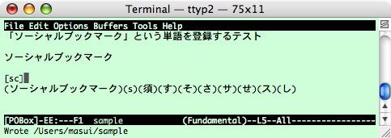
このように、特殊な登録コマンドを利用せず、 普通の検索操作を行なうだけで自動的に登録も行なわれるようにすれば、 単語登録などを簡単に行なうことができるようになるでしょう。
デスクトップ上に表示されている画面を簡単な操作で切り出してWeb上にアップロードして登録してしまう Gyazoというシステムを作ってみました。 Macintoshのgyazoプログラムを起動するとカーソルが領域選択モードに変化するので、 ドラッグして画面上の領域を指定するとそのデータがすぐにWeb上にアップロードされて ブラウザで表示されます。
Gyazoを利用すると、 現在見ている画面の一部を最小限の手間でWebにアップロードすることができますが、 その手間も省きたい場合は 気合いブックマークシステムのような手法で自動的にアップロードを行なうようにすれば 良いかもしれません。
現在は情報を検索する方法が主に注目されていますが、 Web?.0の時代には情報の登録方法も同じぐらい重要になってくるでしょう。 情報を登録しないと罵倒される時代も近いかもしれません。
ユーザが「操作マクロ」を定義できるエディタは多いですし、 本格的なプログラミングが可能なEmacsのようなエディタもありますが、 こういったプログラミングは敷居が高く難しいものですから、 たいていはあきらめてこつこつ作業するのが普通だと思います。 しかし、 手軽にちょっとした自動化処理を指示できると嬉しいでしょうから、 誰でも簡単なプログラミングを行なえるようにする エンドユーザプログラミング や 例示プログラミング という考え方が提唱されています。
本格的なプログラミングは難しいかもしれませんが、 料理のレシピのような手順書であれば簡単に書いたり利用したりできますし、 大抵の人はアナログ時計のアラームをセットできるわけですから、 環境さえ用意すれば誰でも簡単なプログラミングができるようになる 可能性は充分あるといえるでしょう。
MacintoshにはAutomatorという 簡単なビジュアルプログラミングシステムが搭載されており、 アプリケーション操作を自動化するプログラムを手軽に作れるようになっています。 下図は、人間を表現するアイコンへファイルをDrag&Dropすることによって その人にファイルをメールで送るというプログラムを Automatorで作成したものです。 これは 顔アイコンシステム で提案されているものですが、 Automatorを使うとこのように非常に簡単に実装することができます。
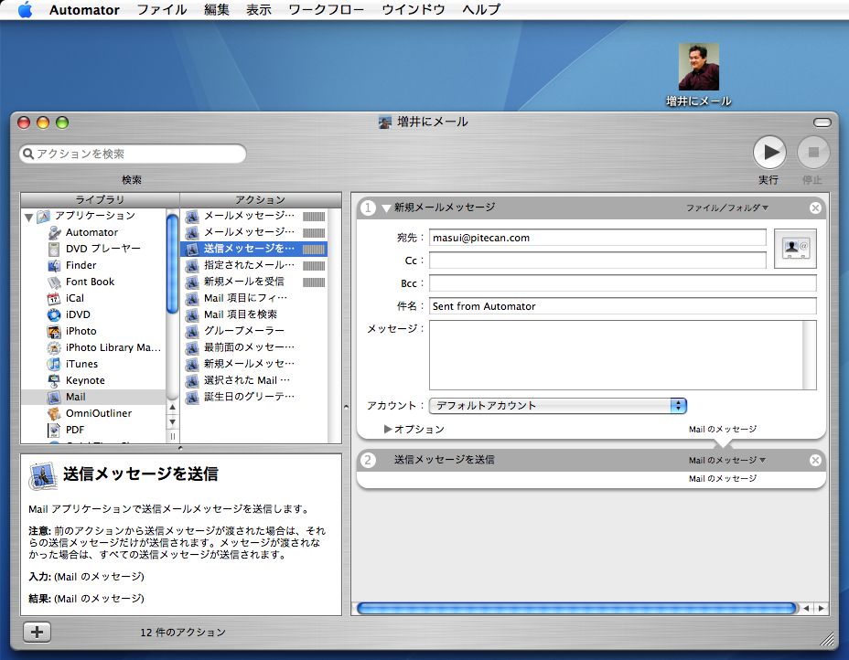
例示プログラミングの手法を使うと、 抽象的な表現を利用せず、具体的な操作だけをもとにして プログラミングを行なうことができます。 私が作成したDynamic Macroというシステムでは、 テキストエディタ上で何か同じ操作を二度繰り返すと、 繰り返した操作がプログラムとして登録され、 その操作を何度も繰り返し実行させることが可能になっています。 例えば “> ” という文字列を二度入力した後で「繰り返しキー」を押すことによって この操作がプログラムとして登録され、 このキーを押すだけで自動呼び出しすることができます。 ユーザはプログラミングを行なっている意識が無くても、 同じことを二度実行しただけでその操作がプログラムとして登録されるのが特徴です。
このように、 例示プログラミングシステムでは 具体的な操作を行なうことによってプログラムを自動生成することができます。 複雑なプログラムを作ろうとすると例を沢山与える必要がありますが、 単純なプログラムを作りたい場合は有効な手法だといえるでしょう。
現在はプログラミングの対象はEmacsとかMacアプリケーションとかブラウザのような パソコン上のソフトウェア限られていますが、 将来的には全世界のセンサやアクチュエータを自在にプログラミングできるように なってほしいものです。 「近くに友達がいれば連絡する」とか、 「株価が上がったら株を売る」 といったプログラムを誰でも簡単に作って利用できると便利でしょう。 「近く」のような概念は普通のプログラム言語では簡単に表現することができませんが、 こういった漠然とした概念はビジュアルプログラミングや例示プログラミングを 利用した方が指定しやすいかもしれません。 ユビキタスコンピューティングにおける様々な自動化を支援する環境に 今後期待したいところです。
パソコン上ではこういった微妙なデータも普通のデータも ファイルとして扱うのが普通ですが、 秘密のファイルを扱うのは結構面倒なものです。 Mac OSのようなUnixベースのシステムでは、 あらゆるファイルに対してパーミッションが定義されており、 他人からの読み書きを許可したり禁止したりできるようになっていますが、 ひとりで使うノートパソコンなどでは このような保護はほとんど意味がありません。 また、 ファイルの隠し属性を設定することによって ファイルが見えないようにすることもできますが、 このような設定は簡単に解除できますから 本当に秘密のファイルを扱うのには適当ではありません。 ファイルを真剣に隠すためには、 置き場所に関して 涙ぐましい努力をしたり、 暗号化を行なったりする方法もありますが、 置き場所やパスワードを忘れてしまったりすると大変です。 最近は、鍵のような特別の装置をUSBなどでパソコンに装着したときだけ 秘密のファイルが見えるようになるシステムが販売されています。 この方法であれば、 秘密のファイルを扱うために秘密のコマンドやアプリケーションを利用する必要がなく、 装置を持ち歩くだけでよいので便利です。
モンゴルの人々が草原でエッチなことをするときは、 遠くから見えるように傘をたてておいて他人が近付かないようにするのだと 聞いたことがあります。 日本の人々が計算機でエッチな画像を見たり秘密のファイルを編集したりするときも この作戦が利用できそうです。 傘が立ったパソコンには近付かないのが無難だと人は思うでしょうし、 傘を立てている本人も緊張感が持続するでしょう。 前回紹介した 気合いブックマークと同じような仕組みを使い、 傘や旗などを利用して秘密状態を細かく制御するようにすれば、 秘密を扱う人も周囲の人もストレスが減るでしょう。
下図は産業技術総合研究所の塚田氏が作った秘密制御システムで、 傘を立てるかわりにノートパソコンのディスプレイの傾きによって 秘密の具合を制御しています。 この状態ではディスプレイは充分開いているので、 ディスプレイには右側のような平凡な画面が表示されています。
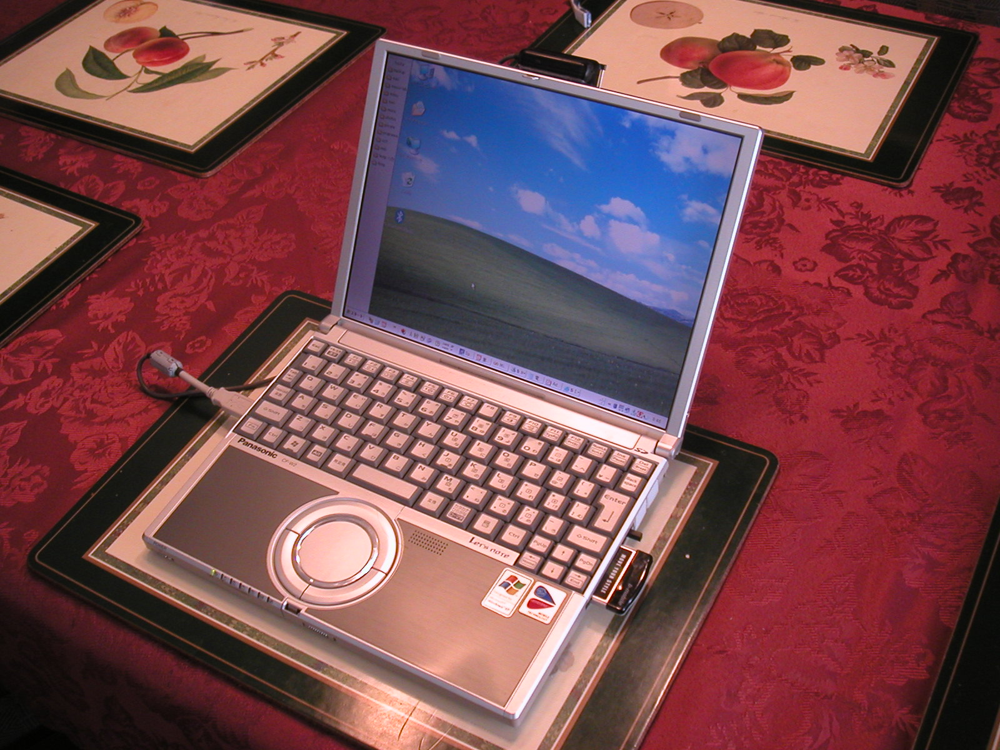
少しディスプレイを閉じ気味にすると、 下図のように個人情報を示すアイコンも表示されるようになります。
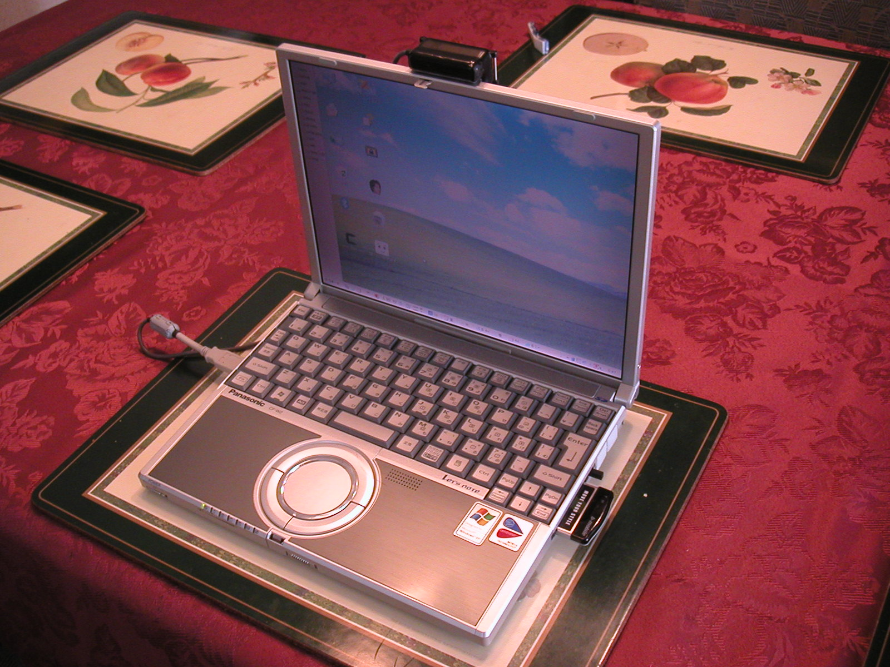
さらに傾けると、ファイル共有ソフトや秘密動画のアイコンが表示されます。 ディスプレイの傾きによる制御は傘や旗ほど派手ではありませんが、 ディスプレイを閉じ気味に仕事をしていれば わざわざ覗きに来る人は少ないでしょう。
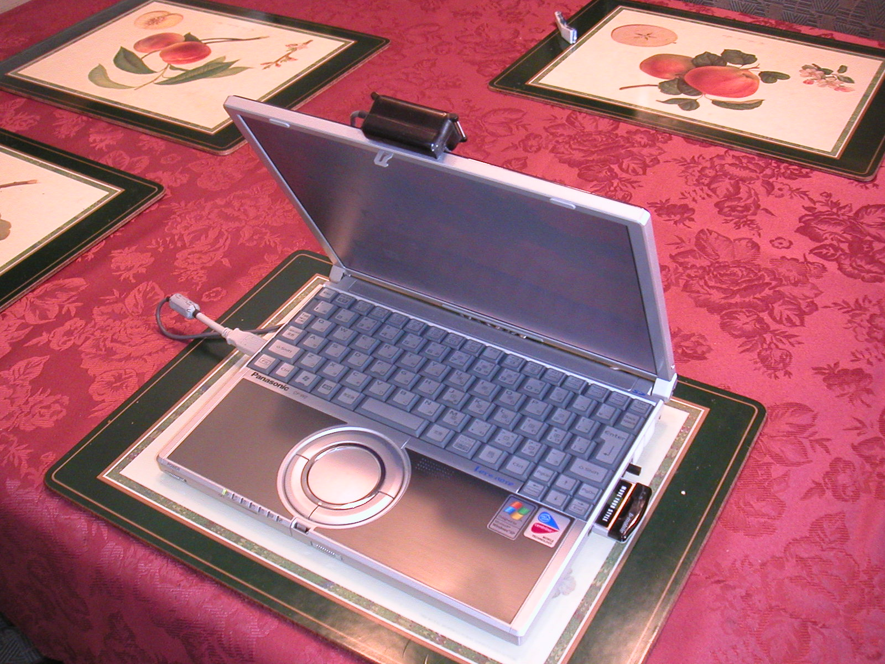
ファイルの暗号化システムなどは現在多くのOSに搭載されていますが、 現状の認証システムと同じような問題点を持っているためか、 まだまだポピュラーにはなっていません。 普通の生活において他人のプライバシーを気にするのと同じぐらいの感覚で 自分や他人の秘密情報を尊重できるようなシステムが普及してほしいものです。
パソコン上でも何もかも能動的に操作をするのが良いわけではありません。 プログラムを起動して時刻を知るよりも 画面のどこかに時計を表示しておく方が楽ちんですし、 最近は「Widget」を使って 天気やニュースなど画面に様々な情報を常に表示させている人もいます。 こういう便利系の機能だけでなく、 ぼーっと見ていても楽しめる面白系の機能があれば、 能動的に頑張らなくてもネットを活用することができるようになるでしょう。 レストランでメニューを読んで料理を注文するのは面倒ですが、 飲茶や回転寿司のように勝手に出てきた料理を食べるのは簡単です。 パソコンでややこしい操作をするのは面倒ですが、 面白い情報が自動的に出現するようであれば、 何も操作する必要が無いので楽ちんです。
このような受動的なインタフェースについて、 様々な研究が行なわれています。 たとえば、 何も操作しなくても面白い情報をみつけたり 写真を楽しんだりすることができる 眺めるインタフェースというものが提案されています。 下図のMemoriumは眺めるインタフェースの実装のひとつで、 キーワードとそのGoogle検索結果が画面上を浮遊し、 ぶつかったキーワードから新たな検索が実行されるという動作が繰り返されるうちに、 関連ある情報や思いがけない情報が自動的に表示されるようになっています。 自動的に表示される情報をぼーっと見るのは癒し系システムとしても使える かもしれません。
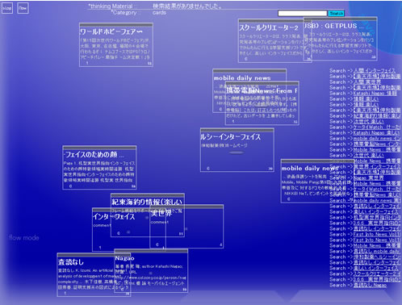
様々なWebページをランダムに表示しても面白いとは思えませんが、 最近は面白いブログなどの更新情報がRSSとして配信されていますし、 面白さがブックマークの数としてすぐわかるようになりましたから、 このような人力パワーを利用することによって、 新しくて面白いWebページを自動的に選んで眺めることができるようになってきました。 人力パワーを利用したサービスは今後も増えるでしょうから、 他力本願で受動的な楽しみ方がこれから期待されます。
というわけでRSSで配信されたWebページをテレビのように眺める FeedTV というサービスを試作してみました。 “masui”というIDを使う場合、 受信したいRSSを http://feed-tv.com/masuiのようなページに登録しておけば、 下図のように http://feed-tv.com/masui/playにアクセスして ページを自動的に再生することができます。 画面では Slashdotが表示されていますが、数秒ごとに異なるページが順番に表示されます。 気のきいたネットウォッチャーのブックマークを登録しておけば、 そのウォッチャーが気に入ったページをぼーっと眺められるようになります。
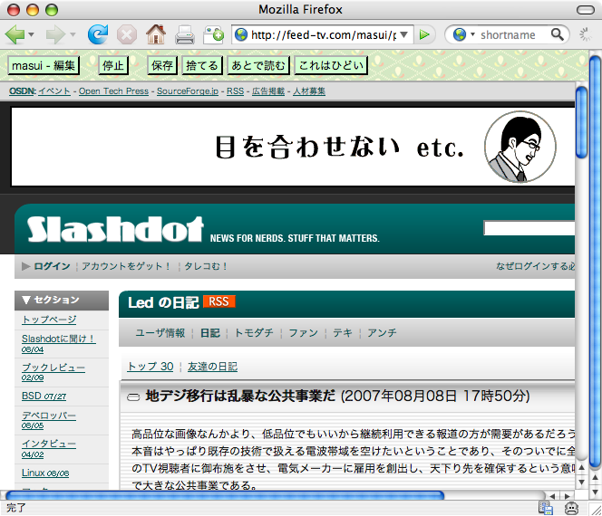
いちいちボタンを押すのは面倒なので、 センサを活用してこういう意図を簡単に伝えられるようにしておくことも考えられます。 下の写真はパソコンの下に体重計を置くことで実装した 気合いブックマークシステムです。 面白いページを見たとき「おおっ」と身をのり出して体重計に4Kg以上の重みがかかると、 現在見ているページがブックマークされるようになっています。 このような自然な行動で「これはひどい」などを表現できるセンサを用意すればいいでしょう。
重要度 再表示の必要性 保存 ◎ △ 捨てる × × あとで読む ○ ○ これはひどい × △ (操作なし) ? ○
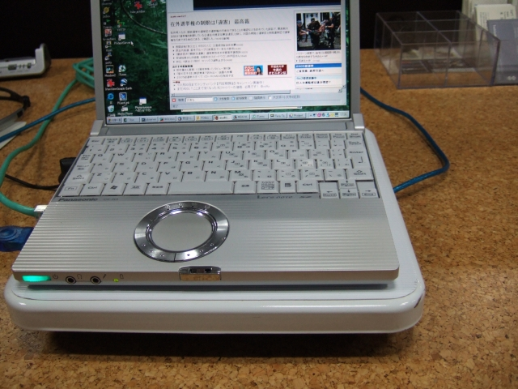
写真の「ロマネスコ」というカリフラワーのように、 全体と一部分がどこでも同じような形をしているものを フラクタル構造といいます。 フラクタル構造は様々な面白い性質を持っており、 比較的簡単に美しいCGを生成するといった応用も多いので、 一時かなり話題になりました。

単純なフラクタル構造として、 上図のように直線を三分割して折り曲げることを無限に繰り返してできる コッホ曲線というものが知られています。 縮尺を大きくするたびに折り曲げを行なうことにすると、 縮尺を3倍にすると長さは4倍、 縮尺を9倍にすると長さは16倍... という具合に縮尺と長さは変化しますが、 長さと縮尺の対数をとると、その比は常にlog(4)/log(3)=1.2618という一定の値になり、 この値はフラクタル次元と呼ばれます。
両対数グラフ上にプロットしたグラフが直線になるような関係があるとき、 これらはべき乗則(冪乗則/Power Low)に従うといいます。 フラクタル構造をもつ図形のパラメタはべき乗則に従いますが、 一見フラクタル構造と関係無いところでもべき乗則が成立することがよくあります。 たとえば、文章中でk番目に多く出現する単語の出現頻度は1/kに比例するという Zipfの法則 と呼ばれる経験則がありますが、 この関係は下図のようにべき乗則に従います。
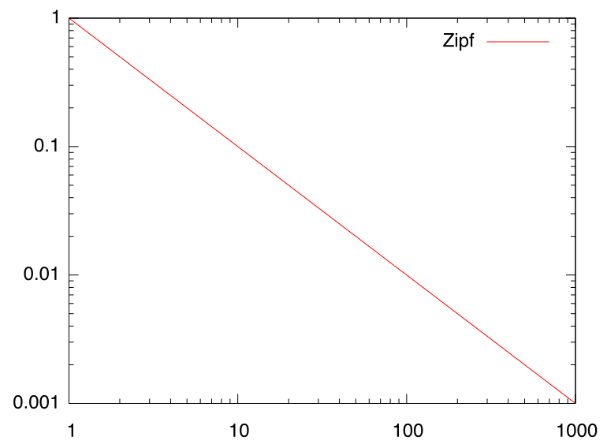
また、富豪の収入もべき乗則に従うと言われています。 世界の長者番付データを もとにしてグラフを書くと下図のようになり、 確かにべき乗則が成立していることがわかります。
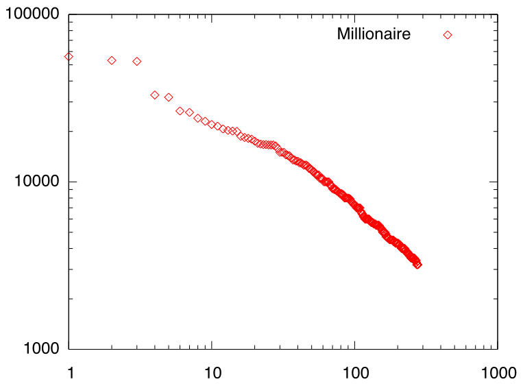
また最近は インターネットやSNSの様々なパラメタがべき乗則に従うことが発見されており、 これらのフラクタル的な「スケールフリー」構造に関する研究が 注目されています。 べき乗則が観測される場合に必ず厳密なフラクタル構造が存在するとは限りませんが、 何らかのフラクタル的な性質が存在するということは可能です。下の図は、私のホームディレクトリに入っているファイルを 大きさでソートして両対数グラフ上にプロットしたものですが、 単語の出現頻度と同じように、かなり奇麗なべき分布になっていることがわかります。
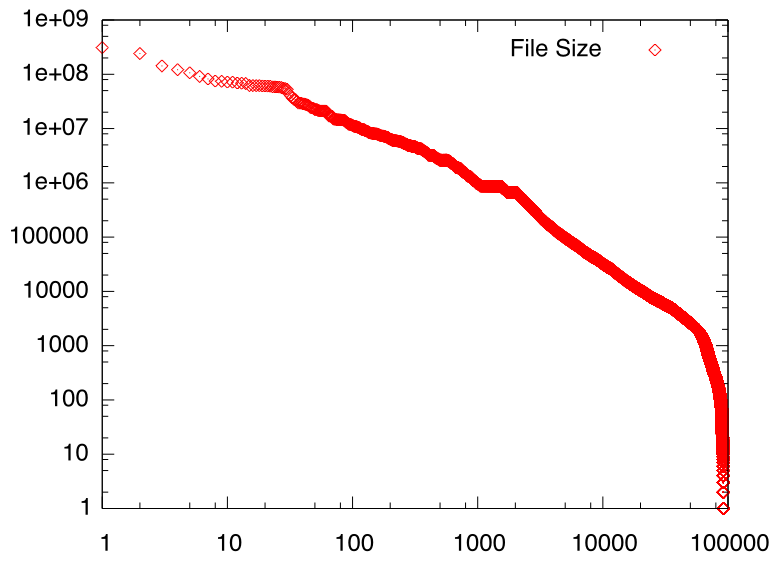
また下図は、私がメモに使っているWikiサイトのページアクセス回数を 回数でソートして並べたものですが、 やはり奇麗なべき分布になっています。
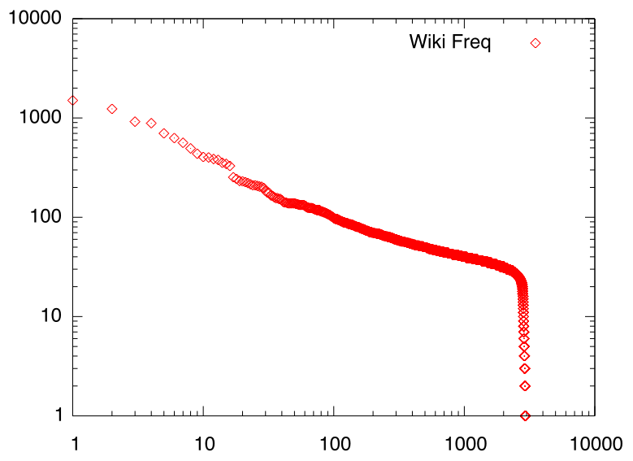
私のWikiページではアクセス時刻もすべて記憶しているのですが、 アクセスの時間間隔をプロットすると下図のようになり、 やはりべき分布に従っていることがわかります。
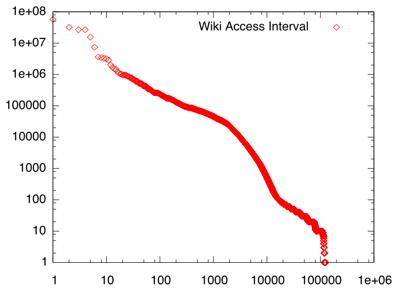
このように、私の個人的なファイルについて調べてみると、 あらゆるパラメタがべき分布していることが判明してしまいました。 私は大きなテキストファイルも小さなテキストファイルも持っていますし、 大きな画像ファイルも小さな画像ファイルも持っています。 私の計算機にはこれらの雑多なファイルがまとめて入っているという点が フラクタル的性質の元になっているのでしょう。
メーリングリストのトラフィック、交通渋滞、ネットワークトラフィックなど、 様々な複雑な事象においてべき分布が報告されており、 その発生する理由について様々な解析が行なわれていますが、 どうやら、強い制約が存在しない場合、ほとんどあらゆる状況において 複雑/大規模な事象はべき分布に従う と断言してしまって大丈夫な気がします。 80:20の法則として有名な パレートの法則や、 最近流行の ロングテール現象も すべてべき分布にもとづく性質の表現であり、 このような性質はあたりまえのものなのかもしれません。 ネットワークのような複雑なシステムにおいてはフラクタル的なべき分布が出現するのは当然であり、 その現象が最近発見されて注目されたという点の方が不思議な気がします。
電話やネットワークのような大規模システムは最初から統計的性質を充分考慮して作成されており、 フラクタル的性質に充分対応できる仕様になっています。 しかし個人で使うパソコンのような小さなシステムでは、 フラクタル的性質は全く考慮されずに設計されています。 ファイルの構造がフラクタル的、メールの届き方もフラクタル的、メニューの使い方もフラクタル的... だという性質がわかっているのであれば、 それに対応したシステムを設計するべきですが、 現在このような性質はほとんど考慮されていません。 よく使うメニュー項目はロングテールな機能とは別に扱う方が良いでしょうし、 大きなファイルと小さなファイルは別のディスクに格納する方が良いかもしれません。 フラクタル性/べき乗則について充分配慮したシステムの設計について 考えてみると面白そうです。
セキュリティシステムの場合も安心感が重要です。 ギザギザの多い鍵はいかにも安全そうに見えますし、 記号を羅列した長いパスワードはいかにも破られにくそうな感じがするものですが、 ギザギザな鍵でもピッキングで簡単に開いてしまうことがありますし、 複雑なパスワードでも管理が悪ければ意味がありません。 本当に安全かどうかは関係なく、 なんとなく安全感が感じられるシステムならばユーザは喜んで使うものです。 強力な暗号も弱い暗号も複雑感は同じようなものに見えるので、 強い暗号の利用をいくら推奨してもなかなか使ってもらえません。
計算機の使いやすさを判断するときは、 実際の作業効率よりもユーザの満足感の方が重要です。 多くのアプリケーションにおいて、 メニュー項目として用意されている機能は大抵 キーボードショートカットとしても用意してあり、 マウスを使って呼び出すことも 特定のキーを叩いて呼び出すこともできるようになっているのが普通です。 メニュー操作は遅いけれども初心者でも使えるのに対し、 熟練ユーザが効率良く使うためにキーボードショートカットが用意されているのだと 一般に信じられていますが、 Macintoshのインタフェースを開発したことで有名なBruce Tognazzini氏 (Tog)が 昔Appleで沢山の実験を行なった結果、 常にキーボードショートカットはマウス利用よりも遅い ということが判明したそうです。 「そんな馬鹿な! 複雑なマウス操作がキーボード操作より速いわけがない!」と思う人は多いでしょうし、 実験に参加したユーザ自身もキーボード操作の方が速かったと感じていたそうですが、 計測結果を見ると常にマウス操作の方が速く、 いくら実験してもこの結果は変わらなかったということです。 Togの考察によれば、 ショートカットキーの利用には高次レベルの思考が必要になっており、 そのときユーザは一時的に記憶喪失になっているため、 短い時間で操作できたように錯覚してしまうのだろうということでした。
Togの実験結果がいつでも成り立つのかは不明ですが、 このような結果がいくら示されても、 熟練ユーザがショートカットキーを好むという傾向は変わらないでしょう。 実際の操作時間がどうであれ、 ショートカットキーの方が効率良く仕事してる感がありますし、 使いこなしてる感のようなジマンパワーも得られるからです。 ユーザにとっては結局このような気分が最も大事なので、 操作時間などを客観的に評価した結果にもとづくよりも、 好きか嫌いかといった主観を重視してインタフェースを設計する方が 望ましいかもしれません。
私は昨年米国で新車を買ったのですが、 買い手の気分を手玉に取るディーラーの手腕に 思う存分翻弄されました。 値段の相場は充分調べてあったので本体価格の交渉はスムーズに進行したのですが、 価格交渉が終わったという安心感につけこんで、 妙な割安感のある保険を勧めてきたり、 事故や故障に対する不安感につけこんだサービスプランを執拗に勧めてきたり、 気分を操るテクニックの良い勉強になりました。 常に正しい論理で判断を行なうことは難しいものです。 状況や勘違いにもとづいた、理屈を越えた気分は 商売でも詐偽でも大事なようです。
偶然と必然を混同する勘違いもよくあります。 たとえば交通事故のほとんどは偶然に起こるものですが、 運転者の心がけに問題があったのだろうとつい思ってしまうことがあるので 注意が必要です。 東南アジアの某国では 電気製品が壊れるのは家の人間に問題があるからだと思われやすいので、 電気修理屋さんは客の家の前に車を駐めてはいけないのだそうです。
ここにあげたものは人間の勘違いのほんの一部です。 人間はあまりに多くの間違いをしますから、 すべての勘違いを網羅するのは簡単ではありません。 kanchigai.com のようなサイトを作って事例を集めてみたいと思っています。
一番大きな勘違いは「自分は勘違いなんかしない」と思うことかもしれません。 勘違いや気分の問題について充分理解したうえで、 日頃からこれらに注意したり 積極的に楽しんだりする余裕を持つと良いでしょう。
自分を証明するために鍵やカードやハンコなどが広く使われていますが、 計算機の上ではパスワードがよく利用されています。 指紋や光彩を利用する生体認証も最近注目されていますが、 特殊な装置が必要になりますし、偽造も可能な場合が多いので、 どこでも使える強力な認証手法としてパスワードの地位に揺るぎは無いようです。
パスワードを用いる認証方式は長年利用されているので、運用に関する多くの知見が存在します。 システムを作成するときの注意点はよくわかっていますし、 破られにくいパスワードの選び方や、 他人に見られることなくパスワードを送る方法などについても深く研究されており、 正しい使い方をする限り安全な認証手法であることは証明されています。
歴史が長いため、パスワードを破るためのノウハウも蓄積されており、 普通に思いつく固有名詞を単純に利用するだけでは強度が不充分であることがわかっているため、 単純なパスワードは登録できないような運用が行なわれていることもあります。 私の以前の職場のシステムは、 私が思いつくあらゆるパスワード文字列について安全性が不充分だといって拒否するので、 頭にきて QWERTYキーボードを鍵盤楽器に見たててメロディを弾くという 楽器手癖方式でパスワードを設定していました。
システムを安全に利用するために 複雑なパスワードを考えかつ記憶する必要があるというのは、 パスワードを用いる認証システムの本質的な問題ですが、 システムの都合のために人間が難しいことを覚えなければならないという状況は 天動説的並に間違っています。 安全であるとシステムに認めてもらうためにはランダムに近いパスワードを利用しなければなりませんが、 そのようなものは記憶することが不可能ですから どこかにパスワードを書いておく必要があり、 システム全体の危険はかえって増大してしまうことになります。 よほど頭がサエた人がシラフの時しか安全に運用できないシステムというものは人間に優しくありませんし、 パスワードを忘れてしまったユーザへの対応に追われるサービス提供者の頭痛も相当なものでしょう。
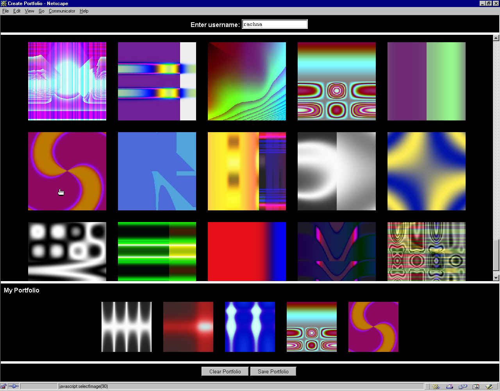
幾何的パタンを覚えるのが苦手な人のために、人の写真を利用する画像認証システムも提案されています。 下図のPassFaceシステムでは、パタンのかわりに人の顔を覚えて認証に利用することができます。
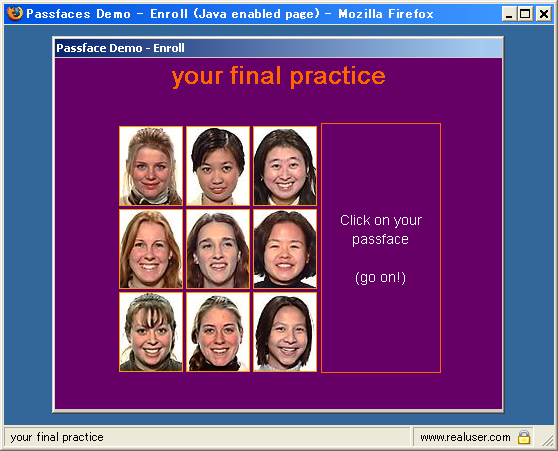
その他、 画像の中の特定の点を指定することにより認証を行なう手法など、 様々な画像認証システムが提案されていますが、 どの場合も 何かを無理矢理覚えなければならないということは共通しており、 覚えるのが大変でかつ忘れる可能性があるという欠点はパスワードと同様です。
人間の記憶はいくつかに分類できると言われています。 パスワードのような無機質な情報や 数学公式のような意味記憶は忘れてしまう可能性が高いものですが、 思い出のようなエピソード記憶はなかなか忘れません。 特に、 自分が書いた文章/自分が描いた絵/自分が撮影した写真のように、 自分を主張するためにジマンパワーを発揮したものの記憶はなかなか忘れるものではありません。 工夫して撮影した写真や、思い出の人や場所などの写真についても同様です。 自分だけが行ったことがある場所の写真や、 自分だけが覚えている小さなエピソードに関連する写真など、 ジマンパワーを内包する写真に写っているものは忘れることがありませんし、 他人にはそのエピソードについての詳しいことはわからないのが普通ですから、 そのような写真に関連する話をクイズとして認証に利用すれば、 安全かつ忘れることがない理想的な認証システムを作ることができると思われます。
下図は、写真に関連するクイズを解くことによってmixiにログインするシステムの例です。 ハリーポッターのキャンペーン期間中と思われるログイン画面の上に、 自動的にクイズが表示されるようになっており、 「この美女とデートしたのはどこか?」のような 5択問題を正しく選ぶと正しいパスワードが入力されるようになっています。 こういう美女とデートしたときの場所を本人は忘れるはずはありませんが他人にはわかりません。 クイズをいくつか用意しておけば、 安全かつ絶対忘れることのない認証システムとして利用することができることになります。
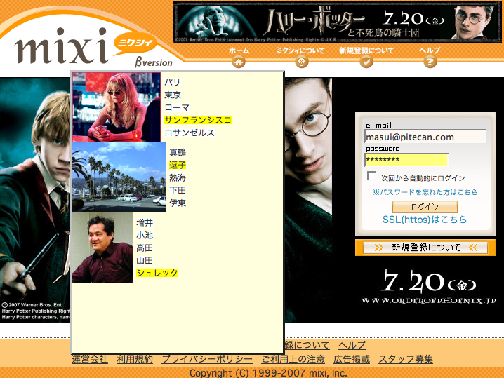
パスワードを根絶するのは難しいかもしれませんが、 前述の画像クイズの方式のように、 既存のシステムの上に別の認証方法を重ねて利用することによって パスワードの欠点を軽減することは可能でしょう。 写真以外のものを使う認証方法も無限に考えられますが、 パスワード認証というインフラの上に、 自己流の認証手法をパスワードに変換して使う手法が これから有望だろう思います。
自己満足と自慢の両方が満たされない場合は一方だけでもかまいません。 自己満足が難しい分野の趣味の場合、他人に自慢することによって 楽しみを増やすことができます。 ピアノや華道のような稽古ごとでは「発表会」が行なわれるのが普通です。 自分の技を発表会で他人に見てもらうことによって批評をあおぐという意味も あるでしょうが、 もっぱら自慢大会という意味が大きいと思われます。 ひとりでピアノを弾くだけで誰もが充分自己満足できるのであれば、 自分が弾く曲を他人に聞かせる必要はありませんから ピアノ発表会の必要性は少ないでしょう。 実際は、 先生に指定された練習曲がつまらなくて自己満足することができないから、 発表会のような機会で腕を自慢する必要があるのでしょう。 このように、自己満足(自満)や自慢を支援する ジマンパワーは趣味にとって非常に重要だといえるでしょう。
ユーザ間で情報を共有したり ユーザの力をあわせて情報を構築したりするという、 いわゆるWeb2.0的サービスが最近すごい勢いで増えていますが、 人気のあるサービスはジマンパワーを充分に発揮できるようになっているようです。 自分にメリットがない場合、 手間をかけて不特定多数に対して有用な情報を提供する親切な人は多くありませんから、 情報共有サービスを流行らせるためには、 情報提供することによって ユーザのジマンパワーを発揮できることが非常に重要だと考えられます。 実際、多くのサービスにおいてジマンパワーは有効に活用されています。
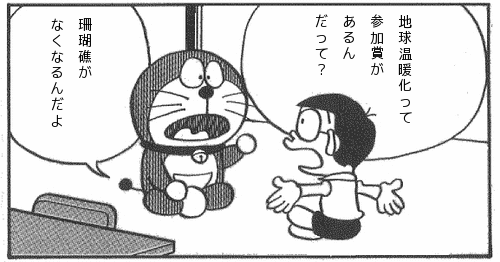
Web2.0的サービスを流行らせるためには ジマンパワーの活用が最も重要なのかもしれません。 サービスが有用かどうかよりも、 ジマンパワーを発揮できるかどうかをまず考えるべきなのでしょう。 ジマンパワーについてはまだまだわかっていないことが多いので、 今後さらなる研究を期待したいところです。
バーベキューをした場所やメンバについては忘れにくいものですが、 バーベキューの日付や年度をずっと覚えているものではありません。 あらゆる写真に対して完璧に日付/人間/場所などのタグをつけておけば大丈夫ですから、 写真をタグで管理するシステムがいろいろ提案されていますが、 毎日沢山撮る写真に対してそんな面倒なことを行なうのはほとんど不可能です。 Flickrや Picasa Webのような 写真共有サービスでは アップロードした写真にタグや位置などを登録できるようになっていますが、 毎日撮る写真をこまめにアップロードしてタグをつけたり位置を登録したりするのは 大変な手間ですし、それですごく便利なことがあるわけではありませんから、 長続きするとは思われません。
自転車が写っているすべての写真に「自転車」というタグがついていると、 これで検索したときあまりにも沢山の写真がマッチしてしまうのでかえって困ったことになります。 かえってマメにタグをつけない方が、今回の例のようにうまくいくことが多いようです。
タグなどを利用したリンクは、ブラウジングするのが楽しくなるだけでなく、 もちろん実際の検索にも有益です。 たとえばイギリスの学会で会った誰かの情報を思い出したいときは、 イギリスの緯度経度をもとにしてイギリスの写真を捜せば 日付が判明しますから、 その付近のメモやメールなどから簡単に情報をみつけることができるでしょう。 こういう情報はいくらググっても出ないことは確実ですが、 自分のリンクを活用すれば簡単にみつけることができます。
タグやリンクはいくらでも増やしていくことができますし、 増やせば増やすほどリンクをたどる楽しみも増えますから、 自分コンテンツの整備は老後の楽しみにぴったりといえるかもしれません。 また自分コンテンツは、自分で楽しむだけでなく、人に自慢するのにも便利です。 世間で流行している趣味の多くは自慢力が重要です。 たとえば楽器の演奏はそれ自体楽しいものですが、人前で披露できればさらに楽しいでしょう。 車の運転はそれ自体楽しいものですが、ウデを披露できればさらに楽しいでしょう。 ひとりで上手に楽器を演奏するのは大変ですが、良い素材を使えばかなり楽をすることができます。 生け花や写真やカラオケのような趣味は、 既存のすぐれた素材に少しだけ自前の工夫を加えて作品にすることができるので 万人向けの趣味となっているのだと思われます。 写真はそれだけで自慢の対象になりますが、 ちょっとした手間を加えて格好良いスライドショーにして公開すると さらに自慢力が満たされますから、 これからの趣味として非常に期待できると思われます。 自分コンテンツの公開で自慢力が発揮できるのであれば、 自分コンテンツの楽しみはますます増えていくことでしょう。 自慢力の活用については次回考えてみたいと思います。
ブログや2ちゃんねるの炎上を見るにつけ 「この元気な力を発電か何かに使えないか?」と思うことがよくあります。 地球に現存する技術では2ちゃんねるパワーを発電に使うのは難しいでしょうが、 人力パワーを有効活用する方法はいろいろ考えられそうです。 インターネットで全世界の計算機が接続されたことによって 無限の計算パワーが利用できるようになりつつあるのは間違いありませんが、 ネットによって接続された全人類の力も同時に利用できるように なったことはそれ以上に革命的なことかもしれません。
機械でもできることに人力パワーを使うのは勿体ないので
人力パワーは人間にしかできないことに使うべきでしょう。
パターン認識や自然言語処理のように、
機械よりも人間の方が得意な仕事は沢山ありますし、
創造的活動はまだまだ計算機にはできません。
書評を書いたりレストランの評判を投稿したりすることは
いつまでたっても計算機には無理でしょう。
このような人間の情報処理能力をネットを使って有効利用する
様々な手法が最近増えています。
例えば、人間には読めるけれども計算機には読むのが難しいような
文字画像を使って人間かどうかを判別する
CAPTCHA
というシステムが最近広く使われるようになってきました。
下のような画像の文字を人間は簡単に読むことができますが、
計算機で認識することは難しいので、
読めた人間にだけ投稿を許すことによって
自働SPAM投稿の拒否などに利用されています。
CAPTCHAは人力パワーの消極的な応用といえるでしょうが、
人力パワーを積極的に使うreCAPTCHA
というシステムも提案されています。
計算機でうまく文字認識できない文字画像をなんとか読みたいとき、
その画像および計算機が生成した普通のCAPTCHA画像のふたつを
認証システムのユーザに提示して両方の文字列を入力させます。
計算機が生成したCAPTCHA画像を読むことができたユーザならば、
計算機が読めなかった画像もちゃんと読めた可能性が高いですから、
人力パワーで画像認識をさせることに成功したことになります。
認証作業1回につき1単語しか人力認識できませんが、
世界中の人間がこの作業を行なえばかなりの効率になるはずです。
計算機は 書評を書いたりレストランの評判を投稿することはできませんが、 そのような結果をまとめて計算することは得意ですから、 他人の評価をもとにして自分が欲しい情報を取得する 協調フィルタリングシステムが 広く使われるようになってきました。 例えばAmazon.comで本を検索すると 「この商品を買った人はこんな商品も買っています」という情報が表示されます。 これはAmazon.comで本を買った人の購入行動(人力パワー)をうまく情報として利用していることになります。 私が運営している本棚.orgというサイトでは ユーザが自分の作った「本棚」に自由に本を登録することができるようになっており、 登録情報を利用した「本棚演算」によって 本や本棚の関係を計算することができます。 Googleが採用している ページランクは、 他ページを評価するという人力パワーが最も有効に利用されている例かもしれません。 書籍やWebページの中身を解析するだけでなく、人力による付帯情報を重視すると効果的な検索ができるという事実は 人力パワーの有効性の証明になっているといえるでしょう。 本を買ったりリンクを貼ったりするといった 単純なユーザ行動を沢山集めることによって重要な情報が出現するわけですから、 もっと広範な人間の行動データを集めることができれば応用はさらに広がるはずです。 あらゆる行動が自動的に収集されて解析されるのは誰でも嫌ですが、 明示的に発信した情報が共有して有効活用されるのであれば大丈夫でしょう。 写真や動画にタグをつけたりソーシャルブックマークを利用したりする積極的な行為 や「炎上」「祭り」でさえもじゃんじゃん人力パワーとして利用したいものです。 Googleが発見したような隠れた応用はまだまだ有るに違いありません。
人力パワーをもっと積極的に使う方法もいろいろ考えられます。
例えば何かのシステムのテストを行ないたい場合、
それをWebで公開して多数の人間に使わせることにより、
大量のテストを効率的に実行することができます。
最近はリリース済なのかユーザテスト中なのかわからないシステムすらあるようです。
mixiは
「β」と書いてあるところを見るとまだテスト中のようですが、
1000万を越える人間の人力パワーをフル活用してユーザテストを行なっているというのは
なかなか壮大な話だと思います。
頻繁にアップデートが要求されるOSも永遠にテスト中なのかもしれません。
ネット上の暇人に有益な仕事をしてもらう方法も考えられます。
私は変な日本語を見ると直したくなることがあるのですが、
変な英語を見ると直したくなるお節介なアメリカ人もいるかもしれませんから、
こういう人間の衝動を利用した英文自働校正システムができる可能性があります。
作りかけのプログラムやアイデアを置いておくと
自動的に完成するシステムすらできるかもしれません。
そんな都合の良い話は一見ありそうに思えませんが、
間違いが書かれたWikiページは「こびとさん」が勝手に直してくれる
ものだと言われていますし、人力パワーはあなどれないものです。
全人類を巻き込んだ人力計算力はまだまだ未知数です。
これまで考えられかったような人力パワーの炸裂に期待したいと思います。
足りなくなれば犬力パワーとかも...